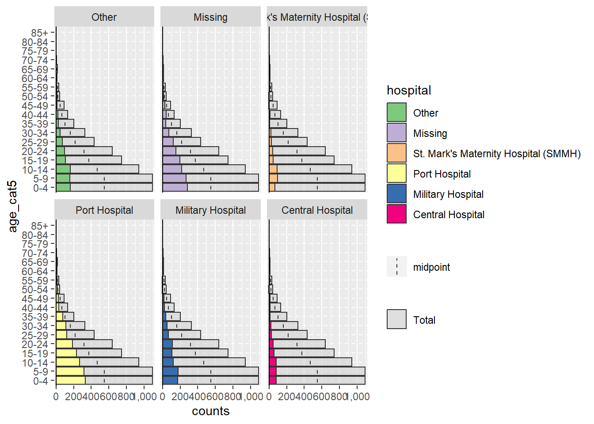
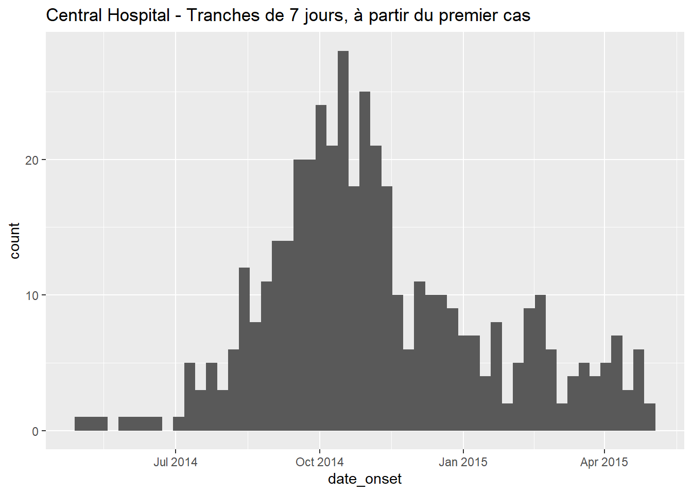
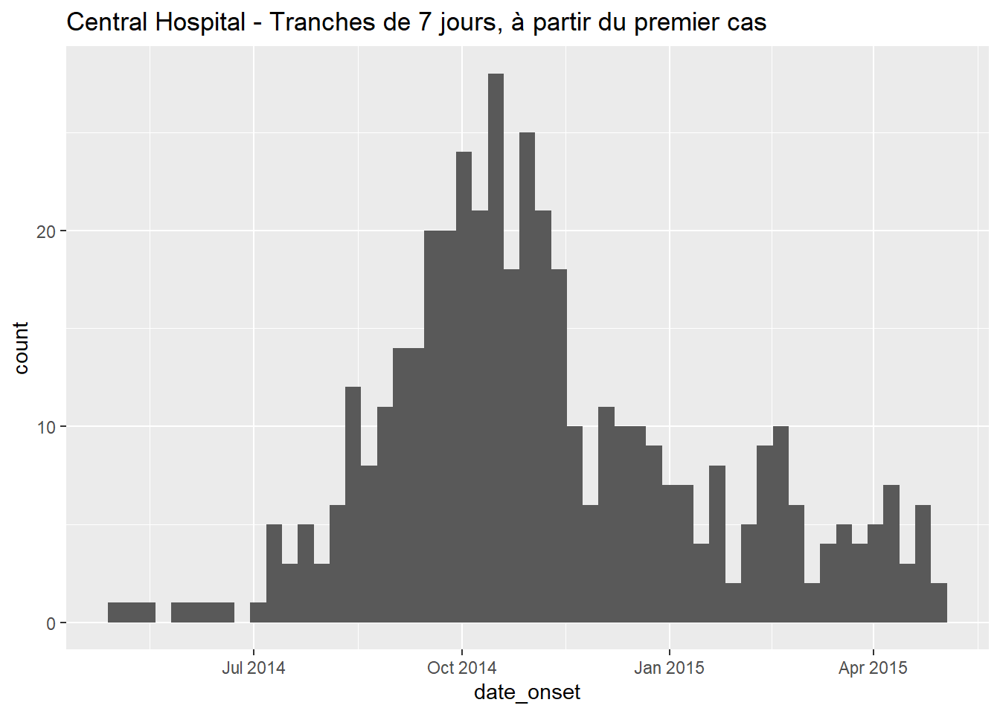
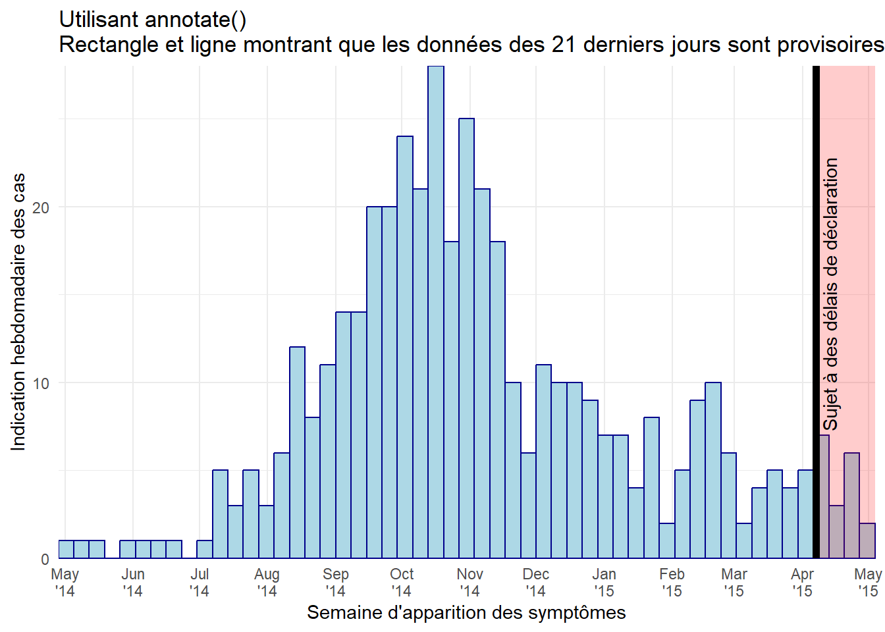

33 Courbes épidémiques

Une courbe épidémique (également connue sous le nom de “courbe épi”) est un graphique épidémiologique de base généralement utilisé pour visualiser le schéma temporel d’apparition de la maladie parmi un groupe de cas ou une épidémie.
L’analyse de la courbe épi peut révéler des tendances temporelles, des valeurs aberrantes, l’ampleur de l’épidémie, la période d’exposition la plus probable, les intervalles de temps entre les générations de cas, et peut même aider à identifier le mode de transmission d’une maladie non identifie (par exemple, source ponctuelle, source commune continue, propagation de personne à personne). Une leçon en ligne sur l’interprétation des courbes épi est disponible sur le site Web du US CDC.
Dans cette page, nous démontrons deux approches pour produire des épicurves dans R :
- Le paquet incidence2, qui peut produire une courbe épi avec des commandes simples.
- Le paquet ggplot2, qui permet une personnalisation avancé via des commandes plus complexes.
Nous abordons également des cas d’utilisation spécifiques tels que :
- Les tracés de données de comptages agrégées
- Le facettage ou la production de petits multiples
- Application de moyennes mobiles
- Montrer quelles données sont “provisoires” ou sujettes à des retards de rapport
- Superposer l’incidence cumulative des cas à l’aide d’un deuxiéme axe
33.1 Préparation
Paquets
Ce chunk de code montre le chargement des paquets nécessaires aux analyses. Dans ce manuel, nous mettons l’accent sur p_load() de pacman, qui installe le paquet si nécessaire et le charge pour l’utiliser. Vous pouvez également charger les paquets installs avec library() de base R. Voir la page sur R basics pour plus d’informations sur les paquets R.
pacman::p_load(
rio, # import/export de fichiers
here, # chemins de fichiers relatifs
lubridate, # travailler avec des dates/epiweeks
aweek, # paquet alternatif pour travailler avec les dates/semaines
incidence2, # épicurves de données linelist
i2extras, # supplément à incidence2
stringr, # recherche et manipulation de chaînes de caractères
forcats, # travail avec des facteurs
RColorBrewer, # palettes de couleurs de colorbrewer2.org
tidyverse # gestion des données + graphiques ggplot2
) Importer des données
Deux exemples de jeux de données sont utilisés dans cette section :
- Liste de cas individuels d’une épidémie simulée.
- Comptage agrégé par hôpital à partir de la même épidémie simulée.
Les jeux de données sont importés à l’aide de la fonction import() du paquetage rio. Voir la page Importation et exportation pour les différentes maniéres d’importer des données.
Liste de cas
Nous importons le jeu de données des cas d’une épidémie d’Ebola simulée. Si vous souhaitez télécharger les données pour les suivre pas à pas, consultez les instructions de la page Télécharger le manuel et les données. Nous supposons que le fichier est dans le répertoire de travail, donc aucun sous-dossier n’est spécifié dans ce chemin de fichier.
linelist <- import("linelist_cleaned.xlsx")Les 50 premiéres lignes sont affichées ci-dessous.
Comptes de cas agrégés par hôpital
Pour les besoins du manuel, le jeu de données des comptages hebdomadaires agrégés par hôpital est créé à partir de la linelist avec le code suivant.
# Importez les données de comptage dans R
count_data <- linelist %>%
group_by(hospital, date_hospitalisation) %>%
summarize(n_cases = dplyr::n()) %>%
filter(date_hospitalisation > as.Date("2013-06-01")) %>%
ungroup()Les 50 premiéres lignes sont affichées ci-dessous :
Définir les paramétres
Pour la production d’un rapport, vous pouvez souhaiter définir des paramétres modifiables tels que la date à laquelle les données sont actuelles (la “date des données”). Vous pouvez ensuite faire référence à l’objet data_date dans votre code lorsque vous appliquez des filtres ou dans des légendes dynamiques.
## définit la date du rapport pour le rapport
## note : peut étre défini à Sys.Date() pour la date actuelle
data_date <- as.Date("2015-05-15")Vérifier les dates
Vérifiez que chaque colonne de date pertinente est de la classe Date et posséde une plage de valeurs appropriée. Vous pouvez le faire simplement en utilisant hist() pour les histogrammes, ou range() avec na.rm=TRUE, ou avec ggplot() comme ci-dessous.
# vérifier la plage de dates d'apparition
ggplot(data = linelist)+
geom_histogram(aes(x = date_onset))
33.2 Epicurves avec le paquet incidence2
Nous démontrons ci-dessous comment faire des épicurves en utilisant le paquet incidence2. Les auteurs de ce paquet ont essayé de permettre à l’utilisateur de créer et de modifier des épicurves sans avoir besoin de connaître la syntaxe de ggplot2. Une grande partie de cette page est adaptée des vignettes du paquet, qui peuvent étre trouvées sur la page incidence2 github.
Exemple simple
2 étapes sont nécessaires pour tracer une courbe épidémique avec le paquet incidence2:
- Créer un objet incidence (en utilisant la fonction
incidence())- Fournir les données
- Spécifiez la colonne de date à
date_index =
- Spécifiez l’“intervalle” dans lequel les cas doivent étre agrégés (quotidien, hebdomadaire, mensuel..)
- Spécifiez toutes les colonnes de regroupement (par exemple, sexe, hôpital, résultat).
- Fournir les données
- Graphique de l’objet d’incidence
- Spécifier les étiquettes, les couleurs, les titres, etc.
Ci-dessous, nous chargeons le paquet incidence2, créons l’objet incidence à partir de la linelist sur la colonne date_onset et agrégeons les cas par semaine. Nous imprimons ensuite un résumé de l’objet d’incidence.
# Chargement du paquet incidence2
pacman::p_load(incidence2)
# crée l'objet incidence, en agrégeant les cas par jour
epi_day <- incidence( # create incidence object
x = linelist, # dataset
date_index = "date_onset", # colonne de date
interval = "week" # intervalle de regroupement par semaine
)L’objet incidence2 lui-même ressemble à un tibble (comme un cadre de données) et peut étre imprimé ou manipulé comme un cadre de données.
class(epi_day)## [1] "incidence2" "data.frame"Voici à quoi il ressemble une fois imprimé. Il posséde une colonne date_index et une colonne count.
epi_day## # incidence: 56 x 3
## # count vars: date_onset
## date_index count_variable count
## * <isowk> <chr> <int>
## 1 2014-W15 date_onset 1
## 2 2014-W16 date_onset 1
## 3 2014-W17 date_onset 5
## 4 2014-W18 date_onset 4
## 5 2014-W19 date_onset 12
## 6 2014-W20 date_onset 17
## 7 2014-W21 date_onset 13
## 8 2014-W22 date_onset 18
## 9 2014-W23 date_onset 22
## 10 2014-W24 date_onset 22
## # ℹ 46 more rowsVous pouvez également imprimer un résumé de l’objet :
# imprimer le résumé de l'objet incidence
summary(epi_day)## From: 2014-W15
## To: 2015-W18
## Groups:
##
## Total observations:
## # A data frame: 1 × 2
## count_variable count
## <chr> <int>
## 1 date_onset 5632Pour tracer l’objet incidence, utilisez plot() sur le nom de l’objet incidence. En arriére-plan, la fonction plot.incidence2() est appelée, donc pour lire la documentation spécifique à incidence2, vous devez exécuter éplot.incidence2.
# Trace l'objet incidence
plot(epi_day)Si vous remarquez beaucoup de petites lignes verticales blanches, essayez d’ajuster la taille de votre image. Par exemple, si vous exportez votre tracé avec ggsave(), vous pouvez fournir des nombres à width = et height =. Si vous élargissez le tracé, ces lignes peuvent disparaétre.
Changer l’intervalle de temps de l’agrégation des cas
L’argument interval = de incidence() définit comment les observations sont regroupées en barres verticales.
Spécifier l’intervalle
incidence2 offre une flexibilité et une syntaxe compréhensible pour spécifier comment vous voulez regrouper vos cas en barres épicurves. Fournissez une valeur comme celles ci-dessous à l’argument interval =. Vous pouvez écrire n’importe laquelle des valeurs ci-dessous au pluriel (par exemple “semaines”), et vous pouvez ajouter des chiffres avant (par exemple “3 mois”).
| Argument option | Explication complémentaire |
|---|---|
| Nombre (1, 7, 13, 14, etc.) | Nombre de jours par intervalle |
| “semaine” | Note : le jour de départ du lundi est la valeur par défaut |
| “2 semaines” | ou 3, 4, 5… |
| “semaine du dimanche” | semaines commençant le dimanche (pourrait aussi utiliser le jeudi, etc.) |
| “2 semaines de dimanche” | ou 3, 4, 5… |
| “MMWRweek” | semaine commençant le dimanche - voir US CDC |
| “mois” | 1er du mois |
| “trimestre” | 1er du mois du trimestre |
| “2 mois” | ou 3, 4, 5… |
| “année” | 1er jour de l’année civile |
Vous trouverez ci-dessous des exemples de l’aspect des différents intervalles lorsqu’ils sont appliqués à la liste de lignes. Notez comment le format et la fréquence par défaut des étiquettes de date sur l’axe des x changent lorsque l’intervalle de date change.
# Créez les objets d'incidence (avec différents intervalles)
##############################
# Hebdomadaire (semaine du lundi par défaut)
epi_wk <- incidence(linelist, "date_onset", interval = 1)
# Semaine du dimanche
epi_Sun_wk <- incidence(linelist, "date_onset", interval = "epiweeks")
# Trois semaines (semaines de lundi par défaut)
epi_2wk <- incidence(linelist, "date_onset", interval = "weekly")
# Mensuel
epi_month <- incidence(linelist, "date_onset", interval = "month")
# Trimestrielle
epi_quarter <- incidence(linelist, "date_onset", interval = "quarter")
# Années
epi_year <- incidence(linelist, "date_onset", interval = "year")
# Tracez les objets d'incidence (+ titres pour plus de clarté)
############################
plot(epi_wk)+ labs(title = "Daily")
plot(epi_Sun_wk)+ labs(title = "Sunday weeks")
plot(epi_2wk)+ labs(title = "Monday Weeks")
plot(epi_month)+ labs(title = "Months")
plot(epi_quarter)+ labs(title = "Quarters")
plot(epi_year)+ labs(title = "Years")Premiére date
Vous pouvez optionnellement spécifier une valeur de la classe Date (par exemple as.Date("2016-05-01")) à firstdate = dans la commande incidence(). Si elle est donnée, les données seront rognées à cette plage et les intervalles commenceront à cette date.
Groupes
Les groupes sont spécifiés dans la commande incidence(), et peuvent étre utilisés pour colorer les barres ou pour facetter les données. Pour spécifier des groupes dans vos données, fournissez le(s) nom(s) de colonne(s) à l’argument groups = de la commande incidence() (sans guillemets autour du nom de colonne). Si vous spécifiez plusieurs colonnes, mettez leurs noms dans c().
Vous pouvez spécifier que les cas avec des valeurs manquantes dans les colonnes de regroupement soient listés comme un groupe distinct NA en mettant na_as_group = TRUE. Sinon, ils seront exclus du graphique.
Pour colorer les barres par une colonne de regroupement, vous devez à nouveau fournir le nom de la colonne à
fill =dans la commandeplot().Pour faire des facettes basées sur une colonne de regroupement, voir la section ci-dessous sur les facettes avec incidence2.
Dans l’exemple ci-dessous, les cas de l’ensemble de l’épidémie sont groupés par leur catégorie d’âge. Les valeurs manquantes sont incluses en tant que groupe. L’intervalle d’épicurve est des semaines.
# Créez un objet incidence, avec des données groupées par catégorie d'âge
age_outbreak <- incidence(
linelist, # jeu de données
date_index = "date_onset", # colonne de date
interval = "week", # agrégation hebdomadaire des cas du lundi
groups = "age_cat") #, # age_cat est défini comme un groupe
#na_as_group = TRUE) # les valeurs manquantes se voient attribuer leur propre groupe
# Tracez l'objet d'incidence groupée
ggplot(age_outbreak) + # objet d'incidence avec age_cat comme groupe
geom_col(aes(date_index, count, fill = age_cat)) + # age_cat est utilisé pour la couleur de remplissage des barres (doit avoir été défini comme une colonne de groupes ci-dessus)
labs(fill = "Age Category", # change le titre de la légende de "age_cat" par défaut (c'est une modification de ggplot2)
y = "Date",
x = "Count") +
theme_bw()
# Tracez l'objet d'incidence groupée
#plot(
# age_outbreak # objet d'incidence avec age_cat comme groupe
# )+ age_cat est utilisé pour la couleur de remplissage des barres (doit avoir été défini comme une colonne de groupes ci-dessus)
#labs(fill = "Age Category") # change le titre de la légende de "age_cat" par défaut (c'est une modification de ggplot2)ATTENTION: Changez le titre de la légende en ajoutant + la commande ggplot2 labs(fill = "your title") à votre graphe incidence2.
Vous pouvez également afficher les barres groupées côte à côte en définissant stack = FALSE dans plot(), comme indiqué ci-dessous :
# Créez un objet d'incidence pour les comptes mensuels.
monthly_gender <- incidence(
linelist,
date_index = "date_onset",
interval = "month",
groups = "gender" # définit le genre comme colonne de regroupement
)
ggplot(monthly_gender) + # objet d'incidence
geom_col(aes(date_index, count, fill = gender), # affichage de barres colorées par sexe
position = "dodge") + # côte à côte (non empilées)
labs(fill = "Gender",
x = "Date",
y = "Count")
#plot(
# monthly_gender, # objet d'incidence
# fill = "gender", # affichage de barres colorées par sexe
# stack = FALSE) # côte à côte (non empilées)Vous pouvez définir l’argument na_as_group = à FALSE dans la commande incidence() pour supprimer les lignes avec des valeurs manquantes du graphique.
Données filtrées
Pour tracer l’épicurve d’un sous-ensemble de données :
- Filtrer les données de la liste de lignes
- Fournissez les données filtrées à la commande
incidence().
- Tracez l’objet d’incidence
L’exemple ci-dessous utilise des données filtrées pour ne montrer que les cas de l’hôpital central.
# filtrez la liste de lignes
central_data <- linelist %>%
filter(hospital == "Central Hospital")
# créez un objet d'incidence en utilisant les données filtrées
central_outbreak <- incidence(central_data, date_index = "date_onset", interval = "week")
# tracer l'objet d'incidence
plot(central_outbreak, title = "Incidence hebdomadaire des cas à l'hôpital central")Comptages agrégés
Si vos données d’origine sont agrégées (comptes), fournissez le nom de la colonne qui contient les comptes de cas à l’argument count = lorsque vous créez l’objet d’incidence avec incidence().
Par exemple, ce cadre de données count_data est la liste de lignes agrégée en comptes quotidiens par hôpital. Les 50 premiéres lignes ressemblent à ceci :
Si vous commencez votre analyse avec des données de comptage quotidiennes comme l’ensemble de données ci-dessus, votre commande incidence() pour convertir ces données en une épicurve hebdomadaire par hôpital ressemblerait à ceci :
epi_counts <- incidence( # créer un objet d'incidence hebdomadaire
count_data, # ensemble de données avec les comptes agrégés par jour
date_index = "date_hospitalisation", # colonne avec les dates
counts = "n_cases", # colonne avec les comptages
interval = "week", # agréger les comptages quotidiens jusqu'aux semaines
groups = "hospital" # groupe par hôpital
)
ggplot(epi_counts) + # objet d'incidence
geom_col(aes(date_index, count, fill = hospital) # affichage de barres colorées par hôpital
) +
labs(fill = "Hospital",
x = "Date",
y = "Count") +
theme_bw()# Tracez la courbe d'incidence hebdomadaire de l'épi, avec des barres empilées par hôpital.
#plot(epi_counts, # objet incidence
# fill = hospital) # colorer les barres par hôpitalFacettes/petits multiples
Pour facetter les données par groupe (i.e. produire des “petits multiples”) :
- Spécifiez la colonne de facettes à
groups =lorsque vous créez l’objet d’incidence.
- Utilisez la commande
facet_plot()au lieu deplot().
- spécifiez les colonnes de regroupement à utiliser comme
fill =et celles à utiliser commefacets =.
Ci-dessous, nous avons défini les deux colonnes hospital et outcome comme colonnes de regroupement dans la commande incidence(). Ensuite, dans facet_plot() nous traçons l’épicurve, en spécifiant que nous voulons une épicurve différente pour chaque hôpital et que dans chaque épicurve les barres doivent étre empilées et colorées par résultat.
epi_wks_hosp_out <- incidence(
linelist, # ensemble de données
date_index = "date_onset", # colonne de date
interval = "month", # barres mensuelles
groups = c("outcome", "hospital") # le résultat et l'hôpital sont données comme colonnes de regroupement
)
ggplot(epi_wks_hosp_out) +
geom_col(aes(date_index, count, fill = outcome )) +
facet_wrap(~hospital) +
labs(fill = "Outcome",
y = "Count",
x = "Date") +
theme_bw()Notez que le package ggtree (utilisé pour afficher les arbres phylogénétiques) posséde également une fonction facet_plot() - c’est pourquoi nous avons spécifié `incidence2::facet_plot()`` ci-dessus.
Modifications avec plot()
Une épicurve produite par incidence2 peut étre modifiée via ces arguments dans la fonction plot().
Voici les arguments de plot() qui modifient l’apparence des barres:
| Argument | Description | Exemples |
|---|---|---|
fill = |
Couleur des barres. Soit un nom de couleur ou un nom de colonne probablement spécifié à groups = dans la commande incidence() |
fill = “red”, oufill = gender|Couleur autour de chaque barre, ou autour de chaque groupement dans une barre|border = “white”|Localisation de la légende|Une des options suivantes : "bottom", "top", "left", "right" ou "none".alpha = |Transparence des barres/boîtes|1 est totalement opaque, 0 est totalement transparentwidth = Valeur entre 0 et 1 indiquant la taille relative des barres par rapport à leur intervalle de temps|width = .7 |
Voici les arguments de plot() qui modifient l’axe des dates:
| Argument(s) | Description |
|---|---|
centre_dates = |
TRUE/FALSE pour savoir si les dates sont affichôes au centre des barres ou au début des barres. |
date_format = |
Régler le format d’affichage de la date en utilisant la syntaxe strptime (“%”). Ne fonctionne que si centre_dates = FALSE (détails ci-dessous). |
n.breaks = |
Nombre approximatif de ruptures d’étiquettes sur l’axe des x souhaité. |
angle = |
Angle des étiquettes de date sur l’axe des x (nombre de degrés) |
size = |
Taille du texte en points |
Notez que l’argument date_breaks = ne fonctionne que si centre_dates = FALSE. Fournissez une valeur entre guillemets en utilisant la syntaxe strptime ci-dessous, comme détaillé dans la page travailler avec des dates. Vous pouvez utiliser \n pour une “nouvelle ligne”.
%d = Numéro du jour du mois (5, 17, 28, etc.)
%j = Numéro du jour de l’année (jour julien 001-366)
%a = Jour de semaine abrégé (Lun, Mar, Mer, etc.)
%A = Jour de la semaine complet (lundi, mardi, etc.)
%w = Numéro du jour de la semaine (0-6, le dimanche est 0)
%u = Numéro du jour de la semaine (1-7, le lundi est 1)
%W = Numéro de la semaine (00-53, le lundi est le début de la semaine)
%U = Numéro de la semaine (01-53, le dimanche est le début de la semaine)
%m = Numéro du mois (par exemple 01, 02, 03, 04)
%b = Mois abrégé (Jan, Feb, etc.)
%B = Mois complet (janvier, février, etc.)
%y = Année à 2 chiffres (ex. 89)
%Y = Année à 4 chiffres (ex. 1989)
%h = heures (horloge de 24 heures)
%m = minutes
%s = secondes
%z = décalage par rapport à GMT
%Z = fuseau horaire (caractère)
Voici les arguments de plot() qui modifient les étiquettes des graphiques:
| Argument(s) | Description |
|---|---|
title = |
Titre du graphique |
xlab = |
Titre de l’axe des x |
ylab = |
Titre de l’axe des y |
size = |
Taille du texte de l’axe des x en pts (utilisez theme() de ggplot pour ajuster les autres tailles) |
Un exemple utilisant plusieurs des arguments ci-dessus :
# filtrez la liste des lignes
central_data <- linelist %>%
filter(hospital == "Central Hospital")
# créez un objet d'incidence en utilisant les données filtrées
central_outbreak <- incidence(
central_data,
date_index = "date_onset",
interval = "week",
groups = "outcome")
ggplot(central_outbreak) +
geom_col(aes(x = date_index, y = count, fill = outcome), # couleur de la boéte/barre
alpha = 0.7, # transparence
color = "grey") + #bordure de la boîte
labs(title = "Cases at Central Hospital", #titre
x = "Week of onset", # étiquette de l'axe des x
y = "Count", # étiquette de l'axe des y
fill = "Outcome") +
theme_bw() +
theme(legend.position="top") # légende en haut de page# tracer l'objet incidence
#plot(
# central_outbreak,
# fill = outcome, # couleur de la boéte/barre
# legend = "top", # légende en haut de page
# title = "Cas à l'hôpital central", # titre
# xlab = "Semaine d'apparition", # étiquette de l'axe des x
# ylab = "Incidence", # étiquette de l'axe des y
# show_cases = TRUE, # afficher chaque cas comme une boîte individuelle
# alpha = 0.7, # transparence
# border = "grey", # bordure de la boîte
# angle = 30, # angle des étiquettes de date
# centre_dates = FALSE, # étiquettes de date au bord de la barre
# date_format = "%a %d %b %Y\n(Week %W)" # ajuste la façon dont les dates sont affichôes
# )Pour ajuster davantage l’apparence du graphique, consultez la section ci-dessous sur les modifications avec ggplot().
Modifications avec ggplot2
Vous pouvez modifier davantage un graphique incidence2 en ajoutant des modifications ggplot2 avec un + aprés la fin de la fonction plot() d’incidence, comme démontré ci-dessous.
Ci-dessous, le tracé incidence2 se termine, puis les commandes ggplot2 sont utilisées pour modifier les axes, ajouter une légende et ajuster la police en gras et la taille du texte.
Notez que si vous ajoutez scale_x_date(), la plupart des formatages de date de plot() seront écrasés. Voir la section sur les épicurves de ggplot() et la page du manuel ggplot tips pour plus d’options.
# filtrez la liste des lignes
central_data <- linelist %>%
filter(hospital == "Central Hospital")
# créez un objet d'incidence en utilisant les données filtrées
central_outbreak <- incidence(
central_data,
date_index = "date_onset",
interval = "week",
groups = c("outcome"))
ggplot(central_outbreak) +
geom_col(aes(x = as.Date(date_index), y = count, fill = outcome), # couleur de la boéte/barre
alpha = 0.7, # transparence
color = "grey") + #bordure de la boîte
scale_y_continuous(
breaks = seq(from = 0, to = 30, by = 5), # spécifie les incréments de l'axe des y par 5
expand = c(0,0)) + # supprime l'espace excédentaire en dessous de 0 sur l'axe des y
scale_x_date(date_labels = "%a %d %b\n%Y (Week %W)") +
# ajouter une légende dynamique
# ajuster le caractère gras et la position de la légende
theme_bw() +
theme(
legend.position="top",
axis.title = element_text(size = 12, face = "bold"), # titres des axes plus grands et plus gras
axis.text = element_text(size = 10, face = "bold"), # taille du texte de l'axe et gras
plot.caption = element_text(hjust = 0, face = "italic"), # déplacer la légende vers la gauche
axis.text.x = element_text(angle = 30, hjust=1)) +
labs(
title = "Cas à l'hôpital central", # titre
x = "Semaine d'apparition", # étiquette de l'axe des x
y = "Incidence", # étiquette de l'axe des y
fill = "Résultat pour le patient", # Titre de la légende
caption = stringr::str_glue( # légende dynamique - voir la page sur les caractères et les chaîne de caractères pour plus de détails
"n = {central_cases} de l'hôpital central
L'apparition des cas va de {earliest_date} à {latest_date}. {missing_onset} cas n'ont pas de date d'apparition et ne sont pas représentés ici.",
central_cases = nrow(central_data),
earliest_date = format(min(central_data$date_onset, na.rm=T), format = '%a %d %b %Y'),
latest_date = format(max(central_data$date_onset, na.rm=T), format = '%a %d %b %Y'),
missing_onset = nrow(central_data %>% filter(is.na(date_onset)))))
# tracer l'objet incidence
#plot(
# central_outbreak,
# fill = outcome, # couleur de la boîte/barre
# legend = "top", # légende sur le dessus
# title = "Cas à l'hôpital central", # titre
# xlab = "Semaine d'apparition", # étiquette de l'axe des x
# ylab = "Incidence", # étiquette de l'axe des y
# show_cases = TRUE, # afficher chaque cas comme une boîte individuelle
# alpha = 0.7, # transparence
# border = "grey", # bordure de la boîte
# centre_dates = FALSE,
# date_format = "%a %d %b\n%Y (Week %W)",
# angle = 30 # angle des étiquettes de date
# )Changer les couleurs
spécifier une palette
Fournissez le nom d’une palette prédéfinie à l’argument col_pal = dans plot(). Le paquet incidence2 est livré avec 2 palettes prédéfinies : “vibrant” et “muted”. Dans “vibrant” les 6 premiéres couleurs sont distinctes et dans “muted” les 9 premiéres couleurs sont distinctes. Aprés ces chiffres, les couleurs sont des interpolations/intermédiaires d’autres couleurs. Ces palettes prédéfinies sont disponibles sur ce site. Les palettes excluent le gris, qui est réservé aux données manquantes (utilisez na_color = pour modifier cette valeur par défaut).
# créez un objet incidence, avec des données groupées par catégorie d'âge
age_outbreak <- incidence(
linelist,
date_index = "date_onset", # date d'apparition pour l'axe des x
interval = "week", # agrégation hebdomadaire des cas
groups = "age_cat")
# tracer l'épicurve avec la palette par défaut
#plot(age_outbreak, fill = age_cat, title = "'vibrant' incidence2 palette par défaut")
# tracer avec une palette de couleurs différente
#plot(age_outbreak, fill = age_cat, col_pal = muted, title = "'muted' incidence2 palette")Vous pouvez également utiliser l’une des palettes base de R (mettez le nom de la palette sans guillemets).
# tracer avec la palette R de base
#plot(age_outbreak, fill = age_cat, col_pal = heat.colors, title = "base R heat.colors palette")
# tracé avec la palette R de base
#plot(age_outbreak, fill = age_cat, col_pal = rainbow, title = "base R rainbow palette")Vous pouvez également ajouter une palette de couleurs à partir du paquet viridis ou du paquet RColorBrewer. Vous devez d’abord charger ces paquets, puis ajouter leurs fonctions respectives scale_fill_*() avec un +, comme indiqué ci-dessous.
pacman::p_load(RColorBrewer, viridis)
# tracer avec une palette de couleurs
plot(age_outbreak, fill = age_cat, title = "Palette Viridis")+
scale_fill_viridis_d(
option = "inferno", # schôma de couleurs, essayez aussi "plasma" ou la valeur par défaut
name = "Age Category", # nom de la légende
na.value = "grey") # pour les valeurs manquantes
# tracer avec la palette de couleurs
plot(age_outbreak, fill = age_cat, title = "RColorBrewer palette")+
scale_fill_brewer(
palette = "Dark2", # palette de couleurs, essayez aussi Accent, Dark2, Paired, Pastel1, Pastel2, Set1, Set2, Set3
name = "Age Category", # nom de la légende
na.value = "grey") # pour les valeurs manquantesspécifier manuellement
Pour spécifier les couleurs manuellement, ajoutez la fonction ggplot2 scale_fill_manual() à la fonction plot() avec un + et fournissez le vecteur de noms de couleurs ou de codes HEX à l’argument values =. Le nombre de couleurs listées doit étre égal au nombre de groupes. Faites attention si les valeurs manquantes sont un groupe - elles peuvent étre converties en une valeur de caractère comme “Missing” pendant votre préparation de données avec la fonction fct_explicit_na() comme expliqué dans la page sur les facteurs.
# couleurs manuelles
plot(age_outbreak, fill = age_cat, title = "Manually-specified colors")+
scale_fill_manual(
values = c("darkgreen", "darkblue", "purple", "grey", "yellow", "orange", "red", "lightblue"), # colors
name = "Age category") # Nom pour la légendeComme mentionné dans la page ggplot tips, vous pouvez créer vos propres palettes en utilisant colorRampPalette() sur un vecteur de couleurs et en spécifiant le nombre de couleurs que vous voulez en retour. C’est un bon moyen d’obtenir de nombreuses couleurs dans une rampe en n’en spécifiant que quelques-unes.
my_cols <- c("darkgreen", "darkblue", "purple", "grey", "yellow", "orange")
my_palette <- colorRampPalette(my_cols)(12) # étendez les 6 couleurs ci-dessus à 12 couleurs
my_palette## [1] "#006400" "#00363F" "#00097E" "#3A0BAF" "#821ADD" "#A84BE2" "#B592CB" "#C9C99B" "#E7E745" "#FFF600" "#FFCD00" "#FFA500"Ajuster l’ordre des niveaux
Pour ajuster l’ordre d’apparition des groupes (sur le graphe et dans la légende), la colonne de regroupement doit étre de classe Facteur. Voir la page sur les facteurs pour plus d’informations.
Tout d’abord, voyons une épicurve hebdomadaire par hôpital avec l’ordre par défaut :
# ORIGINAL - hôpital PAS comme facteur
###################################
# créer un objet d'incidence hebdomadaire, lignes groupées par hôpital et semaine
hospital_outbreak <- incidence(
linelist,
date_index = date_onset,
interval = "week",
groups = hospital)
# tracer l'objet incidence
plot(hospital_outbreak, fill = hospital, title = "ORIGINAL - l'hôpital n'est pas un facteur")Maintenant, pour ajuster l’ordre de sorte que “Missing” et “Other” soient en haut de l’épicurve, nous pouvons faire ce qui suit :
- Charger le paquet forcats, pour travailler avec les facteurs.
- Ajustez l’ensemble de données - dans ce cas, nous définirons un nouvel ensemble de données (
plot_data) dans lequel :- la colonne
genderest définie comme un facteur l’ordre des niveaux est défini avecfct_relevel()de sorte que “Other” et “Missing” soient les premiers, ils apparaissent donc en haut des barres
- la colonne
- L’objet d’incidence est créé et tracé comme précédemment.
- Nous ajoutons les modifications ggplot2.
scale_fill_manual()pour assigner manuellement les couleurs de sorte que “Missing” soit gris et “Other” soit beige.
# MODIFIED - l'hôpital comme facteur
###############################
# charger le paquet forcats pour travailler avec les facteurs
pacman::p_load(forcats)
# Convertir la colonne hôpital en facteur et ajuster les niveaux
plot_data <- lineelist %>%
mutate(hospital = fct_relevel(hospital, c("Missing", "Other"))) # définir "Missing" et "Other" comme niveaux supérieurs.
# créez un objet d'incidence hebdomadaire, groupé par hôpital et par semaine.
hospital_outbreak_mod <- incidence(
plot_data,
date_index = date_onset,
interval = "week",
groups = hospital)
# tracer l'objet d'incidence
plot(hospital_outbreak_mod, fill = hospital)+
# spécifier manuellement les couleurs
scale_fill_manual(values = c("grey", "beige", "darkgreen", "green2", "orange", "red", "pink"))+
# étiquettes ajoutées via ggplot
labs(
title = "MODIFIÉ - l'hôpital comme facteur", # titre du graphique
subtitle = "Autre & Manquant en haut de l'épicurve",
y = "Incidence hebdomadaire des cas ", # titre de l'axe des y
x = "Semaine d'apparition des symptômes", # titre de l'axe des x
fill = "Hôpital") # titre de la légende ATTENTION: Si vous voulez inverser l’ordre de la légende uniquement, ajoutez cette commande ggplot2 guides(fill = guide_legend(reverse = TRUE)).
Lignes de grille verticales
Si vous tracez avec les paramétres par défaut de incidence2, vous pouvez remarquer que les lignes de grille verticales apparaissent à chaque étiquette de date et une fois entre chaque étiquette de date. Cela peut entraîner l’intersection des lignes de grille avec le haut de certaines barres.
<Remarque : ce paragraphe n’est pas applicable avec la version 1.0.0 de incidence2). Vous pouvez spécifier l’intervalle des lignes de grille en ajoutant la commande scale_x_date() de ggplot2 à votre graphe incidence2. Dans celle-ci, spécifiez les intervalles pour date_breaks = et date_minor_breaks = (par exemple “semaines” ou “3 semaines” ou “mois”). Notez que l’utilisation de scale_x_date() remplacera tout formatage des étiquettes de date dans plot(), donc vous devrez spécifier tout format de chaîne à date_labels = comme ci-dessous. –>
Vous pouvez supprimer toutes les lignes de grille en ajoutant la commande ggplot2 theme_classic().
# fabrique un objet d'incidence
a <- incidence(
central_data,
date_index = "date_onset",
interval = "weekly"
)
# Lignes de grille par défaut
plot(a, title = "Lignes par défaut")
# Intervalles de lignes de grille spécifiés
# NE FONCTIONNE PAS AVEC INCIDENCE2 1.0.0
# plot(a, title = "Lignes hebdomadaires")+
# scale_x_date(
# date_breaks = "4 weeks", # major vertical lines align on weeks
# date_minor_breaks = "weeks", # lignes verticales mineures chaque semaine
# date_labels = "%a\n%d\n%b") # format des étiquettes de date
# Pas de lignes de grille
plot(a, title = "Aucune ligne")+
theme_classic() # supprime toutes les lignes du quadrillageNotez cependant que si vous utilisez des semaines, les arguments date_breaks et date_minor_breaks ne fonctionnent que pour les semaines lundi. Si vos semaines sont d’un autre jour de la semaine, vous devrez fournir manuellement un vecteur de dates aux arguments breaks = et minor_breaks = à la place. Voir la section ggplot2 pour des exemples de ceci en utilisant seq.Date().
Incidence cumulée
Vous pouvez facilement produire un graphique de l’incidence cumulée en passant l’objet incidence à la commande incidence2 cumulate() et ensuite à plot(). Cela fonctionne également avec facet_plot().
# fabrique un objet d'incidence hebdomadaire
wkly_inci <- incidence(
linelist,
date_index = "date_onset",
interval = "week")
# tracer l'incidence cumulée
wkly_inci %>%
cumulate() %>%
plot()
Voir la section plus bas sur cette page pour une méthode alternative pour tracer l’incidence cumulative avec ggplot2 - par exemple pour superposer une ligne d’incidence cumulative sur une épicurve.
Moyenne glissante
Vous pouvez ajouter une moyenne glissante à un graphique incidence2 facilement avec add_rolling_average() du paquet i2extras. Passez votre objet incidence2 à cette fonction, puis à plot(). définissez before = comme le nombre de jours précédents que vous voulez inclure dans la moyenne glissante (par défaut, 2). Si vos données sont groupées, la moyenne mobile sera calculée par groupe.
rolling_avg <- incidence( # make incidence object
linelist,
date_index = "date_onset",
interval = "week",
groups = "gender") %>%
i2extras::add_rolling_average(6) # ajouter des moyennes glissantes (dans ce cas, par sexe)
# tracer
plot(rolling_avg, n.breaks = 3) # facettes automatiquement car moyenne glissante sur les groupesPour apprendre à appliquer des moyennes glissantes de maniére plus générale sur des données, voir la page du manuel sur les moyennes glissantes.
33.3 Epicurves avec ggplot2
L’utilisation de ggplot() pour construire votre épicurve permet plus de flexibilité et de personnalisation, mais nécessite plus d’efforts et de compréhension du fonctionnement de ggplot().
Contrairement à l’utilisation du paquet incidence2, vous devez manuellement contrôler l’agrégation des cas par temps (en semaines, mois, etc.) et les intervalles des étiquettes sur l’axe des dates. Ceci doit étre soigneusement géré.
Ces exemples utilisent un sous-ensemble de l’ensemble de données linelist - seulement les cas de l’hôpital central.
central_data <- linelist %>%
filter(hospital == "Central Hospital")Pour produire une épicurve avec ggplot(), il y a trois éléments principaux :
- Un histogramme, avec les cas de la liste de lignes agrégés en “bins” distingués par des points de “rupture” spécifiques.
- Des échelles pour les axes et leurs étiquettes
- Des thèmes pour l’apparence du graphique, y compris les titres, les étiquettes, les légendes, etc.
spécifier les cas en bacs
Nous montrons ici comment spécifier la façon dont les cas seront agrégés dans des cases d’histogramme (“barres”). Il est important de reconnaétre que l’agrégation des cas dans les cases de l’histogramme n’est pas nécessairement les mêmes intervalles que les dates qui apparaîtront sur l’axe des abscisses.
Vous trouverez ci-dessous le code le plus simple pour produire des épicurves quotidiennes et hebdomadaires.
Dans la commande globale ggplot(), le jeu de données est fourni avec data =. Sur cette base, la géométrie d’un histogramme est ajoutée avec un +. Dans la commande geom_histogram(), nous mappons l’esthétique de telle sorte que la colonne date_onset soit mappée sur l’axe des x. Toujours dans geom_histogram() mais non dans aes(), nous définissons la binwidth = des bins de l’histogramme, en jours. Si cette syntaxe ggplot2 est confuse, revoyez la page sur les bases de ggplot.
CAUTION: Tracer des cas hebdomadaires en utilisant binwidth = 7 fait démarrer le premier bin de 7 jours au premier cas, qui pourrait étre n’importe quel jour de la semaine ! Pour créer des semaines spécifiques, voir la section ci-dessous .
# quotidien
ggplot(data = central_data) + # set data
geom_histogram( # ajouter un histogramme
mapping = aes(x = date_onset), # map date column to x-axis
binwidth = 1)+ # cas groupés par 1 jour
labs(title = "Central Hospital - Quotidiennement") # titre
# hebdomadaire
ggplot(data = central_data) + # set data
geom_histogram( # ajouter un histogramme
mapping = aes(x = date_onset), # mappage de la colonne date sur l'axe des x
binwidth = 7)+ # cas classés tous les 7 jours, à partir du premier cas ( !)
labs(title = "Central Hospital - Tranches de 7 jours, à partir du premier cas") # titre 

Notons que le premier cas de cet ensemble de données de l’hôpital Central a vu ses symptômes apparaître le :
format(min(central_data$date_onset, na.rm=T), "%A %d %b, %Y")## [1] "Thursday 01 May, 2014"Pour spécifier manuellement les ruptures des cases de l’histogramme, n’utilisez pas l’argument binwidth =, mais fournissez un vecteur de dates à breaks =..
créez le vecteur de dates avec la fonction R base seq.Date(). Cette fonction attend les arguments to =, from =, et by =. Par exemple, la commande ci-dessous renvoie les dates mensuelles commençant le 15 janvier et se terminant le 28 juin.
monthly_breaks <- seq.Date(from = as.Date("2014-02-01"),
to = as.Date("2015-07-15"),
by = "months")
monthly_breaks # print## [1] "2014-02-01" "2014-03-01" "2014-04-01" "2014-05-01" "2014-06-01" "2014-07-01" "2014-08-01" "2014-09-01" "2014-10-01" "2014-11-01"
## [11] "2014-12-01" "2015-01-01" "2015-02-01" "2015-03-01" "2015-04-01" "2015-05-01" "2015-06-01" "2015-07-01"Ce vecteur peut étre fourni à geom_histogram() sous la forme breaks = :
# mensuel
ggplot(data = central_data) +
geom_histogram(
mapping = aes(x = date_onset),
breaks = monthly_breaks)+ # fournit le vecteur prédéfini de breaks
labs(title = "Bins de cas mensuels") # titre
Une simple séquence de date hebdomadaire peut étre retournée en définissant by = "week". Par exemple :
weekly_breaks <- seq.Date(from = as.Date("2014-02-01"),
to = as.Date("2015-07-15"),
by = "week")Une alternative à la fourniture de dates de début et de fin spécifiques consiste à écrire un code dynamique pour que les bacs hebdomadaires commencent le lundi précédant le premier cas. **Nous utiliserons ces vecteurs de date dans les exemples ci-dessous.
# Séquence de dates hebdomadaires du lundi pour CENTRAL HOSPITAL
weekly_breaks_central <- seq.Date(
from = floor_date(min(central_data$date_onset, na.rm=T), "week", week_start = 1), # lundi avant le premier cas
to = ceiling_date(max(central_data$date_onset, na.rm=T), "week", week_start = 1), # lundi aprés la derniére affaire
by = "week")Décortiquons le code plutôt déconcertant ci-dessus :
- La valeur “from” (date la plus ancienne de la séquence) est crée comme suit : la valeur minimale de la date (
min()avecna.rm=TRUE) dans la colonnedate_onsetest introduite dansfloor_date()du paquet lubridate.floor_date()défini sur “week” renvoie la date de début de la “semaine” de ce cas, étant donné que le jour de début de chaque semaine est un lundi (week_start = 1).
- De même, la valeur “to” (date de fin de la séquence) est créée en utilisant la fonction inverse
ceiling_date()pour retourner le lundi aprés le dernier cas.
- L’argument “by” de
seq.Date()peut étre défini sur un nombre quelconque de jours, de semaines ou de mois.
- Utilisez
week_start = 7pour les semaines de dimanche.
Comme nous utiliserons ces vecteurs de date tout au long de cette page, nous en définissons également un pour l’ensemble du foyer (ce qui précéde ne concerne que l’hôpital central).
# Séquence pour l'ensemble du foyer
weekly_breaks_all <- seq.Date(
from = floor_date(min(linelist$date_onset, na.rm=T), "week", week_start = 1), # lundi avant le premier cas
to = ceiling_date(max(linelist$date_onset, na.rm=T), "week", week_start = 1), # lundi aprés la derniére affaire
by = "week")Ces sorties seq.Date() peuvent étre utilisées pour créer les ruptures des cases de l’histogramme, mais aussi les ruptures pour les étiquettes de date, qui peuvent étre indépendantes des cases. Vous en saurez plus sur les étiquettes de date dans les sections suivantes.
TIP: Pour une commande ggplot() plus simple, sauvegardez à l’avance les ruptures de bacs et les ruptures d’étiquettes de dates en tant que vecteurs nommés, et fournissez simplement leurs noms à breaks =..
Exemple d’épicurve hebdomadaire
Vous trouverez ci-dessous un exemple de code détaillé pour produire des épicurves hebdomadaires pour les semaines du lundi, avec des barres alignées, des étiquettes de date et des lignes de grille verticales. Cette section est destinée à l’utilisateur qui a besoin de code rapidement. Pour comprendre en profondeur chaque aspect (thèmes, étiquettes de date, etc.), passez aux sections suivantes. A noter :
- Les cassures de l’histogramme sont définies avec
seq.Date()comme expliqué ci-dessus pour commencer le lundi avant le premier cas et pour finir le lundi aprés le dernier cas.
- L’intervalle des étiquettes de date est spécifié par
date_breaks =dansscale_x_date().
- L’intervalle des petites lignes verticales entre les étiquettes de date est spécifié par
date_minor_breaks =.
expand = c(0,0)dans les échelles x et y supprime l’espace excédentaire de chaque côte des axes, ce qui garantit également que les étiquettes de date commencent à partir de la premiére barre.
# ALIGNEMENT TOTAL DE LA SEMAINE DU LUNDI
#############################
# définir la séquence des pauses hebdomadaires
weekly_breaks_central <- seq.Date(
from = floor_date(min(central_data$date_onset, na.rm=T), "week", week_start = 1), # lundi avant la premiére affaire
to = ceiling_date(max(central_data$date_onset, na.rm=T), "week", week_start = 1), # lundi aprés la derniére affaire
by = "week") # les bins sont de 7 jours
ggplot(data = central_data) +
# créer un histogramme : spécifier les points de rupture des bacs : commence le lundi avant le premier cas, se termine le lundi aprés le dernier cas
geom_histogram(
# esthétique de la mapping
mapping = aes(x = date_onset), # colonne de date mappée sur l'axe des x
# ruptures de la case de l'histogramme
breaks = weekly_breaks_central, # pauses des cases de l'histogramme définies précédemment
# barres
color = "darkblue", # couleur des lignes autour des barres
fill = "lightblue" # couleur de remplissage dans les barres
)+
# étiquettes de l'axe des x
scale_x_date(
expand = c(0,0), # suppression de l'espace excédentaire sur l'axe des x avant et aprés les barres de cas
date_breaks = "4 weeks", # les étiquettes de date et les principales lignes de grille verticales apparaissent toutes les 3 semaines du lundi
date_minor_breaks = "week", # les lignes verticales mineures apparaissent chaque lundi de semaine
date_labels = "%a\n%d %b\n%Y")+ # format des étiquettes de date
# Axe des y
scale_y_continuous(
expand = c(0,0))+ # suppression de l'espace excédentaire sur l'axe des y en dessous de 0 (alignement de l'histogramme sur l'axe des x)
# thèmes esthétiques
theme_minimal()+ # simplifie le fond du graphique
theme(
plot.caption = element_text(hjust = 0, # légende sur le côte gauche
face = "italic"), # légende en italique
axis.title = element_text(face = "bold"))+ # titres des axes en gras
# étiquettes incluant une légende dynamique
labs(
title = "Incidence hebdomadaire des cas (semaines de lundi)",
subtitle = "Notez l'alignement des barres, des lignes de grille verticales et des étiquettes d'axe sur les semaines du lundi",
x = "Semaine d'apparition des symptômes",
y = "Incidence hebdomadaire des cas signalés",
caption = stringr::str_glue("n = {nrow(central_data)} de Central Hospital ; Les occurrences de cas ranges de {format(min(central_data$date_onset, na.rm=T), format = '%a %d %b %Y')} à {format(max(central_data$date_onset, na.rm=T), format = '%a %d %b %Y')}{nrow(central_data %>% filter(is.na(date_onset)))} cas dont la date d'apparition est manquante et qui ne sont pas indiqués"))Semaines de dimanche
Pour obtenir le graphique ci-dessus pour les semaines de dimanche, quelques modifications sont nécessaires, car les date_breaks = "weeks" ne fonctionnent que pour les semaines de lundi.
- Les points de rupture des bins de l’histogramme doivent étre fixés au dimanche (
week_start = 7)
- Dans
scale_x_date(), les ruptures de date similaires doivent étre fournies àbreaks =etminor_breaks =pour s’assurer que les étiquettes de date et les lignes de grille verticales s’alignent sur les dimanches.
Par exemple, la commande scale_x_date() pour les semaines du dimanche pourrait ressembler à ceci :
scale_x_date(
expand = c(0,0),
# spécifie l'intervalle des étiquettes de date et des principales lignes de grille verticales
breaks = seq.Date(
from = floor_date(min(central_data$date_onset, na.rm=T), "week", week_start = 7), # dimanche avant la premiére affaire
to = ceiling_date(max(central_data$date_onset, na.rm=T), "week", week_start = 7), # dimanche aprés la derniére affaire
by = "4 weeks"),
# spécifier l'intervalle de la ligne de grille verticale mineure
minor_breaks = seq.Date(
from = floor_date(min(central_data$date_onset, na.rm=T), "week", week_start = 7), # dimanche avant le premier cas
to = ceiling_date(max(central_data$date_onset, na.rm=T), "week", week_start = 7), # dimanche aprés la derniére affaire
by = "week"),
# format des étiquettes de date
date_labels = "%a\n%d %b\n%Y")+ # jour, au-dessus abréviation du mois, au-dessus année à 2 chiffresGrouper/colorer par valeur
Les barres de l’histogramme peuvent étre colorées par groupe et “empilées”. Pour désigner la colonne de regroupement, effectuez les modifications suivantes. Voir la page ggplot basics pour plus de détails.
- Dans le mappage esthétique de l’histogramme
aes(), mettez en correspondance le nom de la colonne avec les argumentsgroup =etfill =.
- Supprimez tout argument
fill =à l’extérieur deaes(), car il remplacera celui qui se trouve à l’intérieur.
- Les arguments inside de
aes()s’appliqueront par groupe, alors que les arguments outside s’appliqueront à toutes les barres (par exemple, vous pouvez toujours vouloircolor =à l’extérieur, pour que chaque barre ait la même bordure).
Voici à quoi ressemblerait la commande aes() pour grouper et colorer les barres par sexe :
aes(x = date_onset, group = gender, fill = gender)Le voici appliqué :
ggplot(data = linelist) + # commencer avec linelist (many hospitals)
# faire un histogramme : spécifier les points de rupture de la benne : commence le lundi avant le premier cas, se termine le lundi aprés le dernier cas
geom_histogram(
mapping = aes(
x = date_onset,
group = hospital, # définir les données pour qu'elles soient groupées par hôpital
fill = hospital), # remplissage des barres (couleur intérieure) par hôpital
# les pauses sont les semaines de lundi
breaks = weekly_breaks_all, # séquence de pauses hebdomadaires du lundi pour toute l'épidémie, définie dans le code précédent
closed = "left", # Compter les cas à partir du début du point d'arrêt
# Couleur autour des barres
color = "black")
Ajuster les couleurs
- Pour manuellement régler le remplissage pour chaque groupe, utilisez
scale_fill_manual()(note :scale_color_manual()est différent !).- Utilisez l’argument
values =pour appliquer un vecteur de couleurs.
- Utilisez
na.value =pour spécifier une couleur pour les valeursNA.
- Utilisez l’argument
labels =pour changer le texte des éléments de la légende. Pour étre sur, fournissez un vecteur nommé commec("old" = "new", "old" = "new")ou ajustez les valeurs dans les données elles-mêmes.
- Utilisez
name =pour donner un titre correct à la légende.
- Utilisez l’argument
- Pour plus d’informations sur les échelles et les palettes de couleurs, consultez la page sur les bases de ggplot.
ggplot(data = linelist)+ # commencer avec linelist (plusieurs hôpitaux)
# faire un histogramme
geom_histogram(
mapping = aes(x = date_onset,
group = hospital, # cas groupés par hôpital
fill = hospital), # remplissage des barres par hôpital
# bin breaks
breaks = weekly_breaks_all, # séquence de bin breaks hebdomadaires du lundi, définie dans le code précédent
closed = "left", # Compter les cas à partir du début du point d'arrêt
color = "black")+ # couleur de la bordure de chaque barre
# spécification manuelle des couleurs
scale_fill_manual(
values = c("black", "orange", "grey", "beige", "blue", "brown"),
labels = c("St. Mark's Maternity Hospital (SMMH)" = "St.Mark's"),
name = "Hospital") # spécifier les couleurs de remplissage ("values") - attention à l'ordre !Ajuster l’ordre des niveaux
Le meilleur moyen d’ajuster l’ordre dans lequel les barres groupées sont empilées est de classer la colonne de groupage en tant que classe Facteur. Vous pouvez alors désigner l’ordre des niveaux de facteurs (et leurs étiquettes d’affichage). Voir la page sur facteurs ou ggplot tips pour plus de détails.
Avant de réaliser le tracé, utilisez la fonction fct_relevel() du paquet forcats pour convertir la colonne de regroupement en classe facteur et ajuster manuellement l’ordre des niveaux, comme détaillé dans la page sur les facteurs.
# charger le paquet forcats pour travailler avec les facteurs
pacman::p_load(forcats)
# définir un nouvel ensemble de données avec l'hôpital comme facteur
plot_data <- linelist %>%
mutate(hospital = fct_relevel(hospital, c("Missing", "Other"))) # Convertir en facteur et définir "Manquant" et "Autre" comme niveaux supérieurs pour apparaétre sur le sommet de l'épicurve.
levels(plot_data$hospital) # Imprime les niveaux dans l'ordre## [1] "Missing" "Other" "Central Hospital"
## [4] "Military Hospital" "Port Hospital" "St. Mark's Maternity Hospital (SMMH)"Dans le graphique ci-dessous, les seules différences par rapport au précédent sont que la colonne hospital a été consolidée comme ci-dessus, et que nous utilisons guides() pour inverser l’ordre de la légende, de sorte que “Missing” se trouve en bas de la légende.
ggplot(plot_data) + # Utiliser le NOUVEL ensemble de données avec les hôpitaux comme facteurs réordonnés.
# créer un histogramme
geom_histogram(
mapping = aes(x = date_onset,
group = hospital, # cas groupés par hôpital
fill = hospital), # remplissage des barres (couleur) par hôpital
breaks = weekly_breaks_all, # séquence de pauses hebdomadaires du lundi pour toute l'épidémie, définie en haut de la section ggplot
color = "black")+ # couleur de la bordure autour de chaque barre
# étiquettes de l'axe des x
scale_x_date(
expand = c(0,0), # supprimer l'espace excédentaire sur l'axe des x avant et aprés les barres de cas
date_breaks = "3 weeks", # les étiquettes apparaissent toutes les 3 semaines du lundi
date_minor_breaks = "week", # les lignes verticales apparaissent tous les lundis de la semaine
date_labels = "%d\n%b\n'%y")+ # format des étiquettes de date
# Axe des y
scale_y_continuous(
expand = c(0,0))+ # suppression de l'espace excédentaire sur l'axe des y en dessous de 0
# spécification manuelle des couleurs, ! attention à l'ordre
scale_fill_manual(
values = c("grey", "beige", "black", "orange", "blue", "brown"),
labels = c("St. Mark's Maternity Hospital (SMMH)" = "St.Marks"),
name = "Hospital")+
# thèmes esthétiques
theme_minimal()+ # simplifier le fond du graphique
theme(
plot.caption = element_text(face = "italic", # légende à gauche en italique
hjust = 0),
axis.title = element_text(face = "bold"))+ # titres des axes en gras
# étiquettes
labs(
title = "Incidence hebdomadaire des cas par hôpital",
subtitle = "Hospital as re-ordered factor",
x = "Semaine d'apparition des symptômes",
y = "Cas hebdomadaires")TIP: Pour inverser l’ordre de la légende uniquement, ajoutez cette commande ggplot2 : guides(fill = guide_legend(reverse = TRUE)).
Ajuster la légende
Pour en savoir plus sur les légendes et les échelles, consultez la page ggplot tips. Voici quelques points saillants :
- Modifiez le titre de la légende soit dans la fonction d’échelle, soit avec
labs(fill = "Legend title")(si vous utilisezcolor =esthétique, alors utilisezlabs(color = "")).
theme(legend.title = element_blank())pour ne pas avoir de titre de légende
theme(legend.position = "top")(“bottom”, “left”, “right”, ou “none” pour supprimer la légende)theme(legend.direction = "horizontal")légende horizontaleguides(fill = guide_legend(reverse = TRUE))pour inverser l’ordre de la légende
33.3.1 Bars side-by-side {.unnumbered} (barres côte à côte)
L’affichage côte à côte des barres de groupe (par opposition à l’empilement) est spécifié dans geom_histogram() avec position = "dodge" placé en dehors de aes().
S’il y a plus de deux groupes de valeurs, ceux-ci peuvent devenir difficiles à lire. Envisagez plutôt d’utiliser un graphique à facettes (petits multiples). Pour améliorer la lisibilité dans cet exemple, les valeurs de sexe manquantes sont supprimées.
ggplot(central_data %>% drop_na(gender))+ # Commencez par les cas de l'hôpital central en supprimant les valeurs manquantes pour le sexe.
geom_histogram(
mapping = aes(
x = date_onset,
group = gender, # cas groupés par sexe
fill = gender), # barres remplies par sexe
# histogramme bin breaks
breaks = weekly_breaks_central, # séquence de dates hebdomadaires pour le foyer central - définie en haut de la section ggplot
closed = "left",
color = "black", # couleur du bord des barres
position = "dodge")+ # barres SIDE-BY-SIDE
# Les étiquettes sur l'axe des x
scale_x_date(expand = c(0,0), # supprimer l'espace excédentaire de l'axe des x sous et aprés les barres de cas
date_breaks = "3 weeks", # les étiquettes apparaissent toutes les 3 semaines du lundi
date_minor_breaks = "week", # les lignes verticales apparaissent tous les lundis de la semaine
date_labels = "%d\n%b\n'%y")+ # format des étiquettes de date
# Axe des y
scale_y_continuous(expand = c(0,0))+ # supprime l'espace excédentaire sur l'axe des y entre le bas des barres et les étiquettes
#échelle des couleurs et des étiquettes de légende
scale_fill_manual(values = c("brown", "orange"), # spécifie les couleurs de remplissage ("values") - attention à l'ordre !
na.value = "grey" )+
# thèmes esthétiques
theme_minimal()+ # un ensemble de thèmes pour simplifier le graphe
theme(plot.caption = element_text(face = "italic", hjust = 0), # légende à gauche en italique
axis.title = element_text(face = "bold"))+ # titres des axes en gras
# étiquettes
labs(title = "Incidence hebdomadaire des cas, par sexe",
subtitle = "Sous-titre",
fill = "Gender", # fournir un nouveau titre pour la légende
x = "Semaine d'apparition des symptômes",
y = "Incidence hebdomadaire des cas signalés")Limites de l’axe
Il existe deux façons de limiter l’étendue des valeurs des axes.
Généralement, la méthode préférée est d’utiliser la commande coord_cartesian(), qui accepte xlim = c(min, max) et ylim = c(min, max) (où vous fournissez les valeurs min et max). Ceci agit comme un “zoom” sans réellement supprimer de données, ce qui est important pour les statistiques et les mesures sommaires.
Alternativement, vous pouvez définir les valeurs maximales et minimales de la date en utilisant limits = c() dans scale_x_date(). Par exemple :
scale_x_date(limits = c(as.Date("2014-04-01"), NA)) # définit une date minimum mais laisse la date maximum ouverte. Si vous souhaitez que l’axe des abscisses s’tende jusqu’é une date spécifique (par exemple, la date du jour), même si aucun nouveau cas n’a été signalé, vous pouvez utiliser :
scale_x_date(limits = c(NA, Sys.Date())) # garantit que l'axe des dates s'étendra jusqu'à la date du jour DANGER: Soyez prudent en fixant les ruptures d’échelle ou les limites de l’axe des y (par exemple, 0 à 30 par 5 : seq(0, 30, 5)). De tels nombres statiques peuvent couper votre tracé trop court si les données changent pour dépasser la limite !.
Libellés des axes de date / lignes de grille
TIP: Rappelez-vous que les étiquettes de l’axe des dates sont indépendantes de l’agrégation des données en barres, mais visuellement, il peut étre important d’aligner les bacs, les étiquettes de date et les lignes de grille verticales.
Pour modifier les étiquettes de date et les lignes de grille, utilisez scale_x_date() de l’une de ces façons :
- Si vos bins d’histogramme sont des jours, lundi des semaines, des mois ou des années :
- Utilisez
date_breaks =pour spécifier l’intervalle des étiquettes et des lignes de grille principales (par exemple “jour”, “semaine”, “3 semaines”, “mois” ou “année”). - Utilisez
date_minor_breaks =pour spécifier l’intervalle des lignes verticales mineures (entre les étiquettes de date)
- Ajoutez
expand = c(0,0)pour que les étiquettes commencent à la premiére barre.
- Utilisez
date_labels =pour spécifier le format des étiquettes de date - voir la page Dates pour des conseils (utilisez\npour une nouvelle ligne).
- Utilisez
- Si les cases de votre histogramme sont des semaines de dimanche :
- Utilisez
breaks =etminor_breaks =en fournissant une séquence de ruptures de date pour chacun d’entre eux. - Vous pouvez toujours utiliser
date_labels =etexpand =pour le formatage comme décrit ci-dessus.
- Utilisez
Quelques notes :
- Voir la section ggplot d’ouverture pour des instructions sur la façon de créer une séquence de dates en utilisant
seq.Date().
- Voir cette page ou la page travailler avec des dates pour des conseils sur la création d’étiquettes de date.
Démonstrations
Vous trouverez ci-dessous une démonstration de tracés où les bacs et les étiquettes/grilles sont alignés et non alignés :
# Bacs de 7 jours + étiquettes du lundi
#############################
ggplot(central_data) +
geom_histogram(
mapping = aes(x = date_onset),
binwidth = 7, # bins de 7 jours avec début au premier cas
color = "darkblue",
fill = "lightblue") +
scale_x_date(
expand = c(0,0), # supprime l'espace excédentaire sur l'axe des x en dessous et aprés les barres de cas
date_breaks = "3 weeks", # Lundi toutes les 3 semaines
date_minor_breaks = "week", # lundi semaines
date_labels = "%a\n%d\n%b\n'%y")+ # format des étiquettes
scale_y_continuous(
expand = c(0,0))+ # suppression de l'espace excédentaire sous l'axe des x, mise à plat
labs(
title = "MAL ALIGNÉ",
subtitle = " ! ATTENTION : Les barres de 7 jours commencent le jeudi avec le premier cas.\n Grandes lignes de grille et étiquettes de date au 1er de chaque mois.\n Lignes de grille mineures chaque lundi.")
# Tranches de 7 jours + Mois
#####################
ggplot(central_data) +
geom_histogram(
mapping = aes(x = date_onset),
binwidth = 7,
color = "darkblue",
fill = "lightblue") +
scale_x_date(
expand = c(0,0), # supprime l'espace excédentaire de l'axe des x sous et aprés les barres de cas
date_breaks = "months", # 1er du mois
date_minor_breaks = "week", # semaines de lundi
date_labels = "%a\n%d %b\n%Y")+ # format des étiquettes
scale_y_continuous(
expand = c(0,0)) + # Suppression de l'espace excédentaire sous l'axe des x, mise à plat des données
labs(
title = "MAL ALIGNÉ",
subtitle = " ! ATTENTION : Les barres de 7 jours commencent le jeudi avec le premier cas\nLes lignes de grille principales et les étiquettes de date au 1er de chaque mois\nLes lignes de grille mineures sont hebdomadaires le lundi\nNotez l'espacement inégal de certaines lignes de grille et les tics non alignés avec les barres"
)
# ALIGNEMENT TOTAL DU LUNDI : spécifier que les pauses manuelles sont des lundis
#################################################################
ggplot(central_data) +
geom_histogram(
mapping = aes(x = date_onset),
# les ruptures d'histogramme sont fixées à 7 jours commençant le lundi avant le premier cas
breaks = weekly_breaks_central, # défini plus tôt dans cette page
closed = "left",
color = "darkblue",
fill = "lightblue") +
scale_x_date(
expand = c(0,0), # supprime l'espace excédentaire sur l'axe x en dessous et aprés les barres de cas
date_breaks = "4 weeks", # Lundi toutes les 4 semaines
date_minor_breaks = "week", # lundi semaines
date_labels = "%a\n%d %b\n%Y")+ # format des étiquettes
scale_y_continuous(
expand = c(0,0))+ # Suppression de l'espace excédentaire sous l'axe des x, mise à plat des données
labs(
title = "Lundis ALIGNÉS",
subtitle = "Les intervalles de 7 jours sont réglés manuellement pour commencer le lundi avant le premier cas (28 avr.)\n Les étiquettes de date et les lignes de grille sont aussi sur les lundis")
# ALIGNEMENT TOTAL DES LUNDIS AVEC LES étiQUETTES DE MOIS :
############################################
ggplot(central_data) +
geom_histogram(
mapping = aes(x = date_onset),
# ruptures d'histogramme fixées à 7 jours commençant le lundi avant le premier cas
breaks = weekly_breaks_central, # défini plus tôt dans cette page
color = "darkblue",
closed = "left",
fill = "lightblue") +
scale_x_date(
expand = c(0,0), # supprime l'espace excédentaire sur l'axe x en dessous et aprés les barres de cas
date_breaks = "months", # Lundi toutes les 4 semaines
date_minor_breaks = "week", # lundi semaines
date_labels = "%b\n%Y")+ # format des étiquettes
scale_y_continuous(
expand = c(0,0))+ # suppression de l'espace excédentaire sous l'axe des x, mise à plat
theme(panel.grid.major = element_blank())+ # Suppression des lignes de grille principales (tombent le 1er du mois)
labs(
title = "Lundis ALIGNÉS avec étiquettes MONTHLY",
subtitle = "Bacs de 7 jours réglés manuellement pour commencer le lundi avant le premier cas (28 avril) - étiquettes de date le 1er du mois - Suppression des principaux quadrillages mensuels")
# ALIGNEMENT TOTAL DU DIMANCHE : spécifier les ruptures manuelles des bacs ET les étiquettes pour les dimanches
############################################################################
ggplot(central_data) +
geom_histogram(
mapping = aes(x = date_onset),
# ruptures d'histogramme fixées à 7 jours commençant le dimanche avant le premier cas
breaks = seq.Date(from = floor_date(min(central_data$date_onset, na.rm=T), "week", week_start = 7),
to = ceiling_date(max(central_data$date_onset, na.rm=T), "week", week_start = 7),
by = "7 days"),
color = "darkblue",
closed = "left",
fill = "lightblue") +
scale_x_date(
expand = c(0,0),
# les ruptures de l'étiquette de date et les principales lignes de la grille sont fixées à toutes les 3 semaines, en commençant le dimanche avant le premier cas.
breaks = seq.Date(from = floor_date(min(central_data$date_onset, na.rm=T), "week", week_start = 7),
to = ceiling_date(max(central_data$date_onset, na.rm=T), "week", week_start = 7),
by = "3 weeks"),
# grilles mineures fixées à la semaine commençant le dimanche avant le premier cas
minor_breaks = seq.Date(from = floor_date(min(central_data$date_onset, na.rm=T), "week", week_start = 7),
to = ceiling_date(max(central_data$date_onset, na.rm=T), "week", week_start = 7),
by = "7 days"),
date_labels = "%a\n%d\n%b\n'%y")+ # format des étiquettes
scale_y_continuous(
expand = c(0,0))+ # suppression de l'espace excédentaire sous l'axe des x, mise à plat
labs(title = "Dimanches ALIGNÉS",
subtitle = "Les intervalles de 7 jours ont été réglés manuellement pour commencer le dimanche avant le premier cas (27 avril)\n Les étiquettes de date et les lignes de grille ont également été réglées manuellement sur les dimanches")
données agrégées
Souvent, au lieu d’une liste de lignes, vous commencez par des comptages agrégés d’établissements, de districts, etc. Vous pouvez faire une épicurve avec ggplot() mais le code sera légérement différent. Cette section va utiliser le jeu de données count_data qui a été importé plus tôt, dans la section de préparation des données. Ce jeu de données est la linelist agrégée au nombre de jours d’hospitalisation. Les 50 premiéres lignes sont affichôes ci-dessous.
Tracer des épicentres quotidiens
Nous pouvons tracer une épicurve quotidienne à partir de ces comptes quotidiens. Voici les différences par rapport au code :
- Dans le mappage esthétique
aes(), spécifiezy =comme colonne de comptage (dans ce cas, le nom de la colonne estn_cases). - Ajoutez l’argument
stat = "identity"dansgeom_histogram(), qui spécifie que la hauteur de la barre doit étre la valeury =, et non le nombre de lignes comme c’est le cas par défaut.
- Ajoutez l’argument
width =pour éviter les lignes blanches verticales entre les barres. Pour les données quotidiennes, fixez la valeur à 1. Pour les données de comptage hebdomadaire, fixez la valeur à 7. Pour les données de comptage mensuel, les lignes blanches sont un probléme (chaque mois a un nombre de jours différent) - envisagez de transformer votre axe des x en un facteur ordonné catégorique (mois) et utilisez `geom_col()``.
ggplot(data = count_data) +
geom_histogram(
mapping = aes(x = date_hospitalisation, y = n_cases),
stat = "identity",
width = 1) + # pour les comptages quotidiens, définir width = 1 pour éviter les espaces blancs entre les barres
labs(
x = "Date du rapport",
y = "Nombre de cas",
title = "Incidence quotidienne des cas, à partir des données de comptage quotidiennes")
Tracer les comptages hebdomadaires
Si vos données sont déjà des comptages de cas par semaine, elles peuvent ressembler à cet ensemble de données (appelé count_data_weekly) :
Les 50 premiéres lignes de count_data_weekly sont affichées ci-dessous. Vous pouvez voir que les comptes ont été agrégés en semaines. Chaque semaine est affichée par le premier jour de la semaine (lundi par défaut).
Maintenant, tracez le graphique de façon à ce que x = la colonne epiweek. N’oubliez pas d’ajouter y = la colonne des comptes à la mapping esthétique, et ajoutez stat = "identity" comme expliqué ci-dessus.
ggplot(data = count_data_weekly)+
geom_histogram(
mapping = aes(
x = epiweek, # l'axe des x est l'epiweek (en tant que classe Date)
y = n_cases_weekly, # l'axe des y est la hauteur du nombre de cas hebdomadaires
group = hospital, # nous regroupons les barres et les couleurs par hôpital
fill = hospital),
stat = "identity")+ # ceci est également nécessaire lorsque l'on trace des données de comptage
# étiquettes pour l'axe des x
scale_x_date(
date_breaks = "2 months", # étiquettes tous les 2 mois
date_minor_breaks = "1 month", # grilles tous les mois
date_labels = '%b\n%Y')+ # étiqueté par mois avec l'année en dessous
# Choisissez la palette de couleurs (utilise le paquet RColorBrewer)
scale_fill_brewer(palette = "Pastel2")+
theme_minimal()+
labs(
x = "Semaine d'apparition",
y = "Incidence hebdomadaire des cas",
fill = "Hospital",
title = "Incidence hebdomadaire des cas, à partir des données de comptage agrégées par hôpital")Moyennes mobiles
Voir la page sur les Moyennes mobiles pour une description détaillée et plusieurs options. Vous trouverez ci-dessous une option pour calculer des moyennes mobiles avec le package slider. Dans cette approche, la moyenne mobile est calculée dans l’ensemble de données avant le tracé :
- Regroupez les données en comptes si nécessaire (quotidien, hebdomadaire, etc.) (voir la page sur groupage des données).
- créez une nouvelle colonne pour contenir la moyenne mobile, créée avec
slide_index()du paquet slider.
- Tracez la moyenne mobile comme une
geom_line()au-dessus (aprés) l’histogramme épicurvien
Voir l’utile vignette pour le paquet slider
# charger le paquet
pacman::p_load(slider) # slider utilisé pour calculer les moyennes mobiles
# créer un jeu de données de comptages quotidiens et de moyennes mobiles sur 7 jours
#######################################################
ll_counts_7day <- linelist %>% # commencer avec linelist
## compter les cas par date
count(date_onset, name = "new_cases") %>% # nommer une nouvelle colonne avec les comptages comme "new_cases".
drop_na(date_onset) %>% # supprime les cas dont la date_onset est manquante
## calculer le nombre moyen de cas dans la fenétre de 7 jours
mutate(
avg_7day = slider::slide_index( # créer une nouvelle colonne
new_cases, # calcul basé sur la valeur de la colonne new_cases
.i = date_onset, # l'index est la colonne date_onset, donc les dates non présentes sont incluses dans la fenétre
.f = ~mean(.x, na.rm = TRUE), # La fonction est mean() avec les valeurs manquantes supprimées.
.before = 6, # la fenétre est le jour et les 6 jours précédents
.complete = FALSE), # doit étre FALSE pour que unlist() fonctionne à l'étape suivante
avg_7day = unlist(avg_7day)) # convertit la liste des classes en classes numériques
# tracer
######
ggplot(data = ll_counts_7day) + # commencer avec le nouvel ensemble de données défini ci-dessus
geom_histogram( # crée un histogramme épicurve
mapping = aes(
x = date_onset, # colonne de date comme axe des x
y = new_cases), # la hauteur est le nombre de nouveaux cas quotidiens
stat = "identity", # la hauteur est la valeur y
fill="#92a8d1", # couleur froide pour les barres
colour = "#92a8d1", # même couleur pour la bordure des barres
)+
geom_line( # créer une ligne pour la moyenne mobile
mapping = aes(
x = date_onset, # colonne de date pour l'axe des x
y = avg_7day, # valeur y définie dans la colonne de la moyenne mobile
lty = "7-day \nrolling avg"), # nom de la ligne dans la légende
color="red", # couleur de la ligne
size = 1) + # largeur de la ligne
scale_x_date( # échelle de date
date_breaks = "1 month",
date_labels = '%d/%m',
expand = c(0,0)) +
scale_y_continuous( # échelle de l'axe des y
expand = c(0,0),
limits = c(0, NA)) +
labs(
x="",
y = "Nombre de cas confirmés",
fill = "Legende")+
theme_minimal()+
theme(legend.title = element_blank()) # supprime le titre de la légende
Facettes/petits-multiples
Comme pour les autres ggplots, vous pouvez créer des graphiques à facettes (“petits multiples”). Comme expliqué dans la page ggplot tips de ce manuel, vous pouvez utiliser soit facet_wrap() soit facet_grid(). Ici, nous faisons une démonstration avec facet_wrap(). Pour les épicurves, facet_wrap() est typiquement plus facile car il est probable que vous n’ayez besoin de faire une facette que sur une seule colonne.
La syntaxe générale est facet_wrap(rows ~ cols), où à gauche du tilde (~) est le nom d’une colonne à répartir sur les “rows” du graphique à facettes, et à droite du tilde est le nom d’une colonne à répartir sur les “columns” du graphique à facettes. Plus simplement, il suffit d’utiliser un seul nom de colonne, à droite du tilde : facet_wrap(~age_cat).
Axes libres
Vous devrez décider si les échelles des axes pour chaque facette sont “fixées” aux mêmes dimensions (par défaut), ou “libres” (ce qui signifie qu’elles changeront en fonction des données de la facette). Faites-le avec l’argument scales = dans facet_wrap() en spécifiant “free_x” ou “free_y”, ou “free”.
Nombre de cols et de rangs de facettes
Cela peut étre spécifié avec ncol = et nrow = dans facet_wrap().
Ordre des facettes
Pour changer l’ordre d’apparition, changez l’ordre sous-jacent des niveaux de la colonne de facteurs utilisée pour créer les facettes.
esthétique
La taille et le visage de la police, la couleur de la bande, etc. peuvent étre modifiés par theme() avec des arguments comme :
strip.text = element_text()(taille, couleur, face, angle…)strip.background = element_rect()(par exemple element_rect(fill=“grey”))
strip.position =(position de la bande “bas”, “haut”, “gauche” ou “droite”)
Libellés des bandes
Les étiquettes des graphiques à facettes peuvent étre modifiées par les “étiquettes” de la colonne comme facteur, ou par l’utilisation d’un “labeller”.
Faites une étiquette comme celle-ci, en utilisant la fonction as_labeller() de ggplot2. Puis fournissez l’étiqueteuse à l’argument labeller = de facet_wrap() comme indiqué ci-dessous.
my_labels <- as_labeller(c(
"0-4" = "0-4 ans",
"5-9" = "5-9 ans",
"10-14" = "10-14 ans",
"15-19" = "15-19 ans",
"20-29" = "20-29 ans",
"30-49" = "30-49 ans",
"50-69" = "50-69 ans",
"70+" = "Plus de 70 ans"))Un exemple de graphique à facettes - facetté par la colonne age_cat.
# faire le graphe
###########
ggplot(central_data) +
geom_histogram(
mapping = aes(
x = date_onset,
group = age_cat,
fill = age_cat), # les arguments à l'intérieur de aes() s'appliquent par groupe
color = "black", # les arguments hors aes() s'appliquent à toutes les données
# ruptures d'histogramme
breaks = weekly_breaks_central)+ # vecteur de date prédéfini (voir plus haut dans cette page)
# Les étiquettes sur l'axe des x
scale_x_date(
expand = c(0,0), # supprimez l'espace excédentaire sur l'axe des x en dessous et aprés les barres de cas
date_breaks = "2 months", # les étiquettes apparaissent tous les 2 mois
date_minor_breaks = "1 month", # les lignes verticales apparaissent tous les 1 mois
date_labels = "%b\n'%y")+ # format des étiquettes de date
# Axe des y
scale_y_continuous(expand = c(0,0))+ # supprime l'espace excédentaire sur l'axe des y entre le bas des barres et les étiquettes
# thèmes esthétiques
theme_minimal()+ # un ensemble de thèmes pour simplifier le graphique
theme(
plot.caption = element_text(face = "italic", hjust = 0), # légende à gauche en italique
axis.title = element_text(face = "bold"),
legend.position = "bottom",
strip.text = element_text(face = "bold", size = 10),
strip.background = element_rect(fill = "grey"))+ # titres des axes en gras
# créer des facettes
facet_wrap(
~age_cat,
ncol = 4,
strip.position = "top",
labeller = my_labels)+
# étiquettes
labs(
title = "Incidence hebdomadaire des cas, par catégorie d'âge",
subtitle = "Sous-titre",
fill = "Catégorie d'âge", # fournir un nouveau titre pour la légende
x = "Semaine d'apparition des symptômes",
y = "Cas incidents hebdomadaires signalés",
caption = stringr::str_glue("n = {nrow(central_data)} from Central Hospital ; Case onsets range from {format(min(central_data$date_onset, na.rm=T), format = '%a %d %b %Y')} à {format(max(central_data$date_onset, na.rm=T), format = '%a %d %b %Y')}{nrow(central_data %>% filter(is.na(date_onset)))} cas dont la date d'apparition est manquante et qui ne sont pas indiqués"))Voir ce lien pour plus d’informations sur les étiqueteuses.
33.3.1.1 Épidémie totale dans l’arriére-plan de la facette
Pour afficher l’épidémie totale en arriére-plan de chaque facette, ajoutez la fonction gghighlight() avec des parenthôses vides au ggplot. Cette fonction provient du paquet gghighlight. Notez que le maximum de l’axe des y dans toutes les facettes est maintenant basé sur le pic de l’épidémie entiére. Il y a plus d’exemples de ce package dans la page ggplot tips.
ggplot(central_data) +
# Epicurves par groupe
geom_histogram(
mapping = aes(
x = date_onset,
group = age_cat,
fill = age_cat), # les arguments à l'intérieur de aes() s'appliquent par groupe
color = "black", # les arguments hors aes() s'appliquent à toutes les données
# ruptures d'histogramme
breaks = weekly_breaks_central)+ # vecteur de dates prédéfini (voir en haut de la section ggplot)
# ajoute une épidémie grise en arriére-plan à chaque facette
gghighlight::gghighlight()+
# étiquettes sur l'axe des x
scale_x_date(
expand = c(0,0), # Suppression de l'espace excédentaire sur l'axe des x sous et aprés les barres de cas
date_breaks = "2 months", # les étiquettes apparaissent tous les 2 mois
date_minor_breaks = "1 month", # les lignes verticales apparaissent tous les 1 mois
date_labels = "%b\n'%y")+ # format des étiquettes de date
# Axe des y
scale_y_continuous(expand = c(0,0))+ # supprime l'espace excédentaire de l'axe des y en dessous de 0
# thèmes esthétiques
theme_minimal()+ # un ensemble de thèmes pour simplifier le graphique
theme(
plot.caption = element_text(face = "italic", hjust = 0), # légende à gauche en italique
axis.title = element_text(face = "bold"),
legend.position = "bottom",
strip.text = element_text(face = "bold", size = 10),
strip.background = element_rect(fill = "white"))+ # titres des axes en gras
# créer des facettes
facet_wrap(
~age_cat, # chaque facette est une valeur de age_cat
ncol = 4, # nombre de colonnes
strip.position = "top", # position du titre/strip de la facette
labeller = my_labels)+ # labeller définit ci-dessus
# étiquettes
labs(
title = "Incidence hebdomadaire des cas, par catégorie d'âge",
subtitle = "Sous-titre",
fill = "Catégorie d'âge", # fournit un nouveau titre pour la légende
x = "Semaine d'apparition des symptômes",
y = "Cas incidents hebdomadaires signalés",
caption = stringr::str_glue("n = {nrow(central_data)} from Central Hospital ; Case onsets range from {format(min(central_data$date_onset, na.rm=T), format = '%a %d %b %Y')} à {format(max(central_data$date_onset, na.rm=T), format = '%a %d %b %Y')}{nrow(central_data %>% filter(is.na(date_onset)))} cas dont la date d'apparition est manquante et qui ne sont pas indiqués"))Une facette avec des données
Si vous voulez avoir une seule boîte à facettes qui contient toutes les données, dupliquez l’ensemble des données et traitez les doublons comme une seule valeur de facette. La fonction “helper” CreateAllFacet() ci-dessous peut vous aider (gràce à cet article de blog). Quand elle est exécutée, le nombre de lignes double et il y aura une nouvelle colonne appelée facet dans laquelle les lignes dupliquées auront la valeur “all”, et les lignes originales auront la valeur originale de la colonne de facettes. Il ne vous reste plus qu’à effectuer la facette sur la colonne facet.
Voici la fonction d’aide. Exécutez-la pour qu’elle soit disponible pour vous.
# définir la fonction d'aide
CreateAllFacet <- function(df, col){
df$facet <- df[[col]]
temp <- df
temp$facet <- "all"
merged <-rbind(temp, df)
# s'assurer que la valeur de la facette est un facteur
merged[[col]] <- as.factor(merged[[col]])
return(merged)
}Appliquez maintenant la fonction d’aide à l’ensemble de données, sur la colonne age_cat :
# créez un jeu de données dupliqué et avec une nouvelle colonne "facet" pour afficher "toutes" les catégories d'âge comme autre niveau de facette.
central_data2 <- CreateAllFacet(central_data, col = "age_cat") %>%
# définir les niveaux de facteurs
mutate(facet = fct_relevel(facet, "all", "0-4", "5-9",
"10-14", "15-19", "20-29",
"30-49", "50-69", "70+"))## Warning: There was 1 warning in `mutate()`.
## ℹ In argument: `facet = fct_relevel(...)`.
## Caused by warning:
## ! 1 unknown level in `f`: 70+# vérifier les niveaux
table(central_data2$facet, useNA = "always")##
## all 0-4 5-9 10-14 15-19 20-29 30-49 50-69 <NA>
## 454 84 84 82 58 73 57 7 9Les changements notables de la commande ggplot() sont les suivants :
- Les données utilisées sont maintenant central_data2 (deux fois plus de lignes, avec une nouvelle colonne “facet”).
- L’étiqueteuse devra étre mise à jour, si elle est utilisée.
- Optionnel : pour obtenir des facettes empilées verticalement : la colonne facette est déplacée vers les lignes de l’équation et remplacée à droite par “.” (
facet_wrap(facet~.)), etncol = 1. Vous pouvez aussi avoir besoin d’ajuster la largeur et la hauteur de l’image du graphique en png (voirggsave()dans ggplot tips).
ggplot(central_data2) +
# Epicurves réelles par groupe
geom_histogram(
mapping = aes(
x = date_onset,
group = age_cat,
fill = age_cat), # les arguments à l'intérieur de aes() s'appliquent par groupe
color = "black", # les arguments hors aes() s'appliquent à toutes les données
# ruptures d'histogramme
breaks = weekly_breaks_central)+ # vecteur de dates prédéfini (voir en haut de la section ggplot)
# étiquettes sur l'axe des x
scale_x_date(
expand = c(0,0), # supprime l'espace excédentaire de l'axe des x sous et aprés les barres de cas
date_breaks = "2 months", # les étiquettes apparaissent tous les 2 mois
date_minor_breaks = "1 month", # les lignes verticales apparaissent tous les 1 mois
date_labels = "%b\n'%y")+ # format des étiquettes de date
# Axe des y
scale_y_continuous(expand = c(0,0))+ # supprime l'espace excédentaire sur l'axe des y entre le bas des barres et les étiquettes
# thèmes esthétiques
theme_minimal()+ # un ensemble de thèmes pour simplifier le graphique
theme(
plot.caption = element_text(face = "italic", hjust = 0), # légende à gauche en italique
axis.title = element_text(face = "bold"),
legend.position = "bottom")+
# créer des facettes
facet_wrap(facet~. , # chaque parcelle est une valeur de la facette
ncol = 1)+
# étiquettes
labs(title = "Incidence hebdomadaire des cas, par catégorie d'âge",
subtitle = "Sous-titre",
fill = "Catégorie d'âge", # fournit un nouveau titre pour la légende
x = "Semaine d'apparition des symptômes",
y = "Cas incidents hebdomadaires signalés",
caption = stringr::str_glue("n = {nrow(central_data)} from Central Hospital ; Case onsets range from
{format(min(central_data$date_onset, na.rm=T), format = '%a %d %b %Y')} à
{format(max(central_data$date_onset, na.rm=T), format = '%a %d %b %Y')}\n{nrow(central_data %>% filter(is.na(date_onset)))} cas dont la date d'apparition est manquante et qui ne sont pas indiqués"))
33.4 Données provisoires
Les données les plus récentes présentées dans les épicurves doivent souvent étre marquées comme provisoires, ou sujettes à des retards de déclaration. Ceci peut étre fait en ajoutant une ligne verticale et/ou un rectangle sur un nombre de jours spécifié. Voici deux options :
- Utilisez
annotate():- Pour une ligne, utilisez
annotate(geom = "segment"). Fournissezx,xend,y, etyend. Ajustez la taille, le type de ligne (lty) et la couleur.
- Pour un rectangle, utilisez
annotate(geom = "rect"). Fournissez xmin/xmax/ymin/ymax. Ajustez la couleur et l’alpha.
- Pour une ligne, utilisez
- Regroupez les données par statut provisoire et colorez ces barres différemment.
CAUTION: Vous pourriez essayer geom_rect() pour dessiner un rectangle, mais l’ajustement de la transparence ne fonctionne pas dans un contexte de linelist. Cette fonction superpose un rectangle pour chaque observation/rangée ! Utilisez soit un alpha trés faible (par exemple 0,01), soit une autre approche.
Utilisation de annotate()
- Dans
annotate(geom = "rect"), les argumentsxminetxmaxdoivent recevoir des entrées de la classe Date.
- Notez que, comme ces données sont agrégées en barres hebdomadaires et que la derniére barre s’étend jusqu’au lundi suivant le dernier point de données, la région ombrée peut sembler couvrir 4 semaines.
- Voici un
annotate()exemple en ligne
ggplot(central_data) +
# histogramme
geom_histogram(
mapping = aes(x = date_onset),
breaks = weekly_breaks_central, # vecteur de date prédéfini - voir en haut de la section ggplot
color = "darkblue",
closed = "left",
fill = "lightblue") +
# échelles
scale_y_continuous(expand = c(0,0))+
scale_x_date(
expand = c(0,0), # Suppression de l'espace excédentaire sur l'axe des x sous et aprés les barres de cas
date_breaks = "1 month", # 1er du mois
date_minor_breaks = "1 month", # 1er du mois
date_labels = "%b\n'%y")+ # format des étiquettes
# étiquettes et theme
labs(
title = "Utilisant annotate()\nRectangle et ligne montrant que les données des 21 derniers jours sont provisoires",
x = "Semaine d'apparition des symptômes",
y = "Indication hebdomadaire des cas")+
theme_minimal()+
# ajoute un rectangle rouge semi-transparent aux données provisoires
annotate(
"rect",
xmin = as.Date(max(central_data$date_onset, na.rm = T) - 21), # la note doit étre enveloppée dans as.Date()
xmax = as.Date(Inf), # la note doit étre enveloppée dans as.Date()
ymin = 0,
ymax = Inf,
alpha = 0.2, # alpha facile et intuitif à ajuster en utilisant annotate()
fill = "red")+
# ajoute une ligne verticale noire au-dessus des autres couches
annotate(
"segment",
x = max(central_data$date_onset, na.rm = T) - 21, # 21 jours avant les derniéres données
xend = max(central_data$date_onset, na.rm = T) - 21,
y = 0, # la ligne commence à y = 0
yend = Inf, # ligne jusqu'au sommet du graphique
size = 2, # taille de la ligne
color = "black",
lty = "solid")+ # type de ligne, par exemple "solid", "dashed".
# ajouter du texte dans le rectangle
annotate(
"text",
x = max(central_data$date_onset, na.rm = T) - 15,
y = 15,
label = "Sujet à des délais de déclaration",
angle = 90)
La même ligne verticale noire peut étre obtenue avec le code ci-dessous, mais en utilisant geom_vline() vous perdez la possibilité de contrôler la hauteur :
geom_vline(xintercept = max(central_data$date_onset, na.rm = T) - 21,
size = 2,
color = "black")Couleur des barres
Une autre approche pourrait consister à ajuster la couleur ou l’affichage des barres de données provisoires elles-mêmes. Vous pouvez créer une nouvelle colonne dans l’étape de préparation des données et l’utiliser pour regrouper les données, de sorte que les ” aes(fill = )`” des données provisoires puissent avoir une couleur ou un alpha différent des autres barres.
# ajouter une colonne
############
plot_data <- central_data %>%
mutate(tentative = case_when(
date_onset >= max(date_onset, na.rm=T) - 7 ~ "Tentative", # tenative si dans les 7 derniers jours
TRUE ~ "Reliable")) # tout le reste est fiable
# tracé
######
ggplot(plot_data, aes(x = date_onset, fill = tentative)) +
# histogramme
geom_histogram(
breaks = weekly_breaks_central, # vecteur de données prédéfini, voir en haut de la page ggplot
color = "black") +
# échelles
scale_y_continuous(expand = c(0,0))+
scale_fill_manual(values = c("lightblue", "grey"))+
scale_x_date(
expand = c(0,0), # Supprimez l'espace excédentaire de l'axe des x sous et aprés les barres de cas
date_breaks = "3 weeks", # Lundi toutes les 3 semaines
date_minor_breaks = "week", # lundi semaines
date_labels = "%d\n%b\n'%y")+ # format des étiquettes
# étiquettes et theme
labs(title = "Afficher les jours de déclaration provisoire",
subtitle = "")+
theme_minimal()+
theme(legend.title = element_blank()) # supprimer le titre de la légende33.5 Étiquettes de date à plusieurs niveaux
Si vous voulez des étiquettes de date à plusieurs niveaux (par exemple, le mois et l’année) sans dupliquer les niveaux d’étiquette inférieurs, envisagez l’une des approches ci-dessous :
Rappelez-vous - vous pouvez utiliser des outils comme \n avec les arguments date_labels ou labels pour mettre des parties de chaque étiquette sur une nouvelle ligne en dessous. Cependant, le code ci-dessous vous aide à prendre les années ou les mois (par exemple) sur une ligne inférieure et seulement une fois. Quelques notes sur le code ci-dessous :
- Le nombre de cas est agrégé en semaines pour des raisons esthétiques. Voir la page Epicurves (onglet données agrégées) pour plus de détails.
- Une ligne
geom_area()est utilisée au lieu d’un histogramme, car l’approche par facettes ci-dessous ne fonctionne pas bien avec les histogrammes.
Aggréger en comptages hebdomadaires
# créez un ensemble de données sur le nombre de cas par semaine.
#######################################
central_weekly <- linelist %>%
filter(hospital == "Central Hospital") %>% # Filtrer linelist
mutate(week = lubridate::floor_date(date_onset, unit = "weeks")) %>% # count(week) %>% # count(week)
count(week) %>% # résume le nombre de cas hebdomadaires
drop_na(week) %>% # Suppression des cas dont la date d'apparition est manquante
complete( # remplir toutes les semaines où aucun cas n'a été signalé
week = seq.Date(
from = min(week),
to = max(week),
by = "week"),
fill = list(n = 0)) # convertir les nouvelles valeurs NA en comptage 0Faire des graphiques
# tracer avec une bordure de boîte sur l'année
##############################
ggplot(central_weekly) +
geom_area(aes(x = week, y = n), # faire une ligne, spécifier x et y
stat = "identity") + # car la hauteur de la ligne est un nombre compté
scale_x_date(date_labels="%b", # le format des étiquettes de date montre le mois
date_breaks="month", # étiquettes de date au 1er de chaque mois
expand=c(0,0)) + # suppression de l'espace excédentaire à chaque extrémité
scale_y_continuous(
expand = c(0,0))+ # Suppression de l'espace excédentaire sous l'axe des x
facet_grid(~lubridate::year(week), # facette sur l'année (de la colonne de la classe Date)
space="free_x",
scales="free_x", # les axes x s'adaptent à la plage de données (pas "fixe")
switch="x") + # étiquettes des facettes (année) en bas de page
theme_bw() +
theme(strip.placement = "outside", # placement des étiquettes de facettes
strip.background = element_rect(fill = NA, # facet labels no fill grey border
color = "gray50"),
panel.spacing = unit(0, "cm"))+ # pas d'espace entre les panneaux de facettes
labs(title = "Étiquettes d'année imbriquées, bordure d'étiquette grise")# tracé sans bordure sur l'année
#################################
ggplot(central_weekly,
aes(x = week, y = n)) + # établir x et y pour tout le graphique
geom_line(stat = "identity", # créer une ligne, la hauteur de la ligne est le nombre de comptage
color = "#69b3a2") + # couleur de la ligne
geom_point(size=1, color="#69b3a2") + # faire des points aux points de données hebdomadaires
geom_area(fill = "#69b3a2", # zone de remplissage sous la ligne
alpha = 0.4)+ # transparence du remplissage
scale_x_date(date_labels="%b", # format de l'étiquette de la date pour montrer le mois
date_breaks="month", # étiquettes de date au 1er de chaque mois
expand=c(0,0)) + # supprimer l'espace excédentaire
scale_y_continuous(
expand = c(0,0))+ # suppression de l'espace excédentaire sous l'axe des x
facet_grid(~lubridate::year(week), # facette sur l'année (de la colonne de la classe Date)
space="free_x",
scales="free_x", # les axes x s'adaptent à la plage de données (pas "fixe")
switch="x") + # étiquettes des facettes (année) en bas de page
theme_bw() +
theme(strip.placement = "outside", # placement des étiquettes de facettes
strip.background = element_blank(), # pas de fond d'étiquette de facette
panel.grid.minor.x = element_blank(),
panel.border = element_rect(color="grey40"), # bordure grise du PANEL de la facette
panel.spacing=unit(0, "cm"))+ # Pas d'espace entre les panneaux à facettes
labs(title = "Étiquettes annuelles imbriquées - points, ombrées, pas de bordure d'étiquette")Les techniques ci-dessus ont été adaptées de this et this post sur stackoverflow.com.
33.6 Double axe
Bien qu’il y ait des discussions acharnées sur la validité des doubles axes au sein de la communauté de visualisation des données, de nombreux superviseurs d’épi veulent toujours voir une épicurve ou un graphique similaire avec un pourcentage superposé à un deuxiéme axe. Ce sujet est abordé plus en détail dans la page ggplot tips, mais un exemple utilisant la méthode cowplot est présenté ci-dessous :
- Deux graphiques distincts sont créés, puis combinés avec le paquet cowplot.
- Les graphiques doivent avoir exactement le même axe des x (limites définies), sinon les données et les étiquettes ne seront pas alignées.
- Chacun utilise
theme_cowplot()et l’un d’entre eux a l’axe des y déplacé sur le côte droit du graphique
#Chargez le paquet
pacman::p_load(cowplot)
# Faire le premier tracé de l'histogramme épicurve
#######################################
plot_cases <- linelist %>%
# Tracer les cas par semaine
ggplot()+
# créer un histogramme
geom_histogram(
mapping = aes(x = date_onset),
# bin breaks chaque semaine en commençant le lundi avant le premier cas, jusqu'au lundi aprés le dernier cas
breaks = weekly_breaks_all)+ # vecteur prédéfini de dates hebdomadaires (voir en haut de la section ggplot)
# spécifier le début et la fin de l'axe des dates pour l'aligner avec les autres graphiques
scale_x_date(
limits = c(min(weekly_breaks_all), max(weekly_breaks_all)))+ # min/max des pauses hebdomadaires prédéfinies de l'histogramme
# étiquettes
labs(
y = "Cas quotidiens",
x = "Date d'apparition des symptômes"
)+
theme_cowplot()
# faire un second tracé du pourcentage de décés par semaine
###########################################
plot_deaths <- linelist %>% # commence avec linelist
group_by(week = floor_date(date_onset, "week")) %>% # créer une colonne semaine
# résumer pour obtenir le pourcentage hebdomadaire de cas décédés
summarise(n_cases = n(),
died = sum(outcome == "Death", na.rm=T),
pct_died = 100*died/n_cases) %>%
# commencer le tracé
ggplot()+
# ligne du pourcentage hebdomadaire de décés
geom_line( # créer une ligne de pourcentage de décés
mapping = aes(x = week, y = pct_died), # spécifie la hauteur des y comme colonne pct_died
stat = "identity", # fixer la hauteur de la ligne à la valeur de la colonne pct_death, et non au nombre de lignes (par défaut)
size = 2,
color = "black")+
# mêmes limites de l'axe des dates que l'autre graphique - alignement parfait
scale_x_date(
limits = c(min(weekly_breaks_all), max(weekly_breaks_all)))+ # min/max des pauses hebdomadaires prédéfinies de l'histogramme
# ajustements de l'axe des y
scale_y_continuous( # ajuster l'axe des y
breaks = seq(0,100, 10), # définit les intervalles de rupture de l'axe des pourcentages
limits = c(0, 100), # définit l'étendue de l'axe des pourcentages
position = "right")+ # déplace l'axe des pourcentages vers la droite
# étiquette pour l'axe des Y, pas d'étiquette pour l'axe des X
labs(x = "",
y = "Pourcentage décédé") + # étiquette de l'axe des pourcentages
theme_cowplot() # ajoutez ceci pour que les deux graphiques fusionnent bien ensembleUtilisez maintenant cowplot pour superposer les deux graphiques. Une attention particuliére a été portée à l’alignement de l’axe des x, au côte de l’axe des y et à l’utilisation de theme_cowplot().
aligned_plots <- cowplot::align_plots(plot_cases, plot_deaths, align="hv", axis="tblr")
ggdraw(aligned_plots[[1]]) + draw_plot(aligned_plots[[2]])33.7 Incidence cumulée
Note : Si vous utilisez incidence2, consultez la section sur la façon dont vous pouvez produire l’incidence cumulée avec une fonction simple. Cette page traitera de la façon de calculer l’incidence cumulée et de la tracer avec ggplot().
Si vous commencez avec une liste de cas, créez une nouvelle colonne contenant le nombre cumulé de cas par jour dans une épidémie en utilisant cumsum() de base R :
cumulative_case_counts <- linelist %>%
count(date_onset) %>% # nombre de lignes par jour (retourné dans la colonne "n")
mutate(
cumulative_cases = cumsum(n) # nouvelle colonne du nombre cumulé de lignes à chaque date
)Les 10 premiéres lignes sont affichôes ci-dessous :
Cette colonne cumulative peut ensuite étre tracée en fonction de la date_onset, en utilisant `geom_line()`` :
plot_cumulative <- ggplot()+
geom_line(
data = cumulative_case_counts,
aes(x = date_onset, y = cumulative_cases),
size = 2,
color = "blue")
plot_cumulative
On peut aussi le superposer à l’épicurve, avec un double axe en utilisant la méthode cowplot décrite ci-dessus et dans la page ggplot tips :
#charger le paquet
pacman::p_load(cowplot)
# Faire le premier tracé de l'histogramme épicurve
plot_cases <- ggplot()+
geom_histogram(
data = linelist,
aes(x = date_onset),
binwidth = 1)+
labs(
y = "Cas quotidiens",
x = "Date d'apparition des symptômes"
) +
theme_cowplot()
# créer un second tracé de la ligne des cas cumulés
plot_cumulative <- ggplot()+
geom_line(
data = cumulative_case_counts,
aes(x = date_onset, y = cumulative_cases),
size = 2,
color = "blue")+
scale_y_continuous(
position = "right")+
labs(x = "",
y = "Cas cumulés")+
theme_cowplot()+
theme(
axis.line.x = element_blank(),
axis.text.x = element_blank(),
axis.title.x = element_blank(),
axis.ticks = element_blank())Utilisez maintenant cowplot pour superposer les deux graphiques. Une attention particuliére a été portée à l’alignement de l’axe des x, au côte de l’axe des y et à l’utilisation de theme_cowplot().
aligned_plots <- cowplot::align_plots(plot_cases, plot_cumulative, align="hv", axis="tblr")
ggdraw(aligned_plots[[1]]) + draw_plot(aligned_plots[[2]])